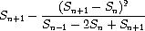

Just thought the TAG group would appreciate this story.
I wrote a small script to handle scanning of all my financial documents into
my computer. It's real simple and easy to use. Well, I have moved since I
used it, about a year ago. So, now with tax time coming, I decided it was
time to start scannnig in all my financial papers and shredding the files I
do not need to keep. Plus, I can burn them to cd and have a backup for the
safety deposit box.
Well...
I did real well, when I moved last year. I didn't lose one thing. I really
mean it. I've been in the house and I haven't missplaced anything. Until last
weekend. I couldn't find that #@#%#! script anywhere. I searched all my
servers, and backup CDs. I was pretty ticked and about half way through
rewriting it, when I remembered something.
I wrote an email talking about it to my local LUG a couple years ago. After
digging in my mail for a while I found a reference that said, and I quote,
Expect some articles from me. I have many other little programs I've written
over the years. I need to write up nice documentation for them all and post
them for the gazette. I would hate to lose them too.
[Rick]
Richard, you might perhaps appreciate a quotation from the Penguinus Maximus:
"Real men don't use backups, they post their stuff on a public ftp server
and let the rest of the world make copies." - Linus Torvalds
Immortalize those cool scripts of yours too, send them in to LinuxGazette as either articles or nice little tips.
-- Heather
Reading Linux Gazette is like a treasure hunt, you never know what you'll
find. Do you mean for this to be published?
http://linuxgazette.net/issue99/lg_mail.html
Did you get cracked by a polite cracker?
A prankster on your staff?
I almost took that entry out because it seemed the first part had been
lost, but I assumed Thomas or Heather had wanted it in so I left it.
I don't remember when I wrote the original or whether I cc'd it to TAG.
-- Mike
Well, it went right over my head. Sorry! It is a funny sig, I may have to
emulate it in some fashion, like OMG WTF ROFFLE lol HAHAHAA or somesuch.
Oh, *that!* It was just an extremely cute .sig that was in the email (I
immediately stole a copy for my quote file.
-- Ben
The original sender really had that in his sig. Thomas and I normally
strip signature blocks, but especially amusing ones that
make Linux just a little more fun - sometimes I let 'em live :D
-- Heather
[Rick]
I'm pretty sure she's referring to the tongue-in-cheek 31337-speak down
at the bottom of Dave Bechtel's letter. Unless the Cookie Monster,
Oscar, Elmo, Snuffleupagus, and the Elite Sesame Street Crew have
suddenly turned malevolent, nobody has much to fear (or is that PH33R?).
Oh, cuteness in .sigs is a well-established meme. We have nothing to
PH33R but PH33R itself.
Welcome to the influence of the bunnies! With ky00t, we will
rule the world!
-- Ben
[LG 98] 2c Tips: #4
Sat, 31 Jan 2004 05:59:02 +0000 (GMT)
Thomas Adam (The LG Weekend Mechanic)
Question by Robin Chhetri (robinchhetri from fastmail.fm)
Robin Chhetri wrote:
Thanks a lot for your answer.I will add here that I send this questions
months ago(I don't remember the exact date) and I had figured out the
solution to the problem too a long time back.
That's OK. The particular tip was interesting, so we published it
nonetheless.
But I am indebted at least for your reply.
Not at all. You're quite welcome.
If you don't mind could you tell me the link in which this question was
published.
I'm pleased to say that Thomas Adam, our Weekend Mechanic, is feeling
well again, and we hope you enjoy the article he has in this month's
issue. Warm thanks to everyone who thought kindly of him while he was
recovering.
This page edited and maintained by the Editors of Linux Gazette HTML script maintained by Heather Stern of Starshine Technical Services, http://www.starshine.org/
Some of you will have expressed questions like: "When will XYZ be in
stable" or "is there a backport for such and such". You can in fact
backport packages yourself. For such cases, the following procedure works:
(note: I maintain a number of backported debs, and this routine works)...
1. Add a deb-src line for sid to your sources.list. Typically:
deb-src http://www.mirror.ac.uk/sites/ftp.debian.org/debian/ unstable main
(where: <package> refers to the package name in question). What this will
do is install the build dependencies for the given package, and then will
build the package.
When I teach a class, I often need to push one or more files to my
students' systems. Previously, I would write a "for-do-done" loop and
use "scp" to get the files across, laboriously logging in and exiting
out of each system every time I wanted to do a transfer - painfully
clunky.
Then I did some searching on the Net and found "sshtool" by "noconflic".
Written in Expect, it allows multiple host logins and copying. However,
it did not have a "no password" mode (i.e., logging in when
".ssh/authorized_keys" contains your key) and read the list of hosts
from a list defined within the program. I've modified it to read an
external file called "pushlist" and added a "no password" mode; this
last, of course, requires that you first push a "~/.ssh/authorized_keys"
to the host list.
First, create your "pushlist", possibly from an "/etc/hosts" on one of
the local machines. It should contain all your target hosts, one line
per host. Next, create your ".ssh/authorized_keys" in the directory
where you keep "sshtool" by copying your public keys into it:
I can also execute a command on all the systems via the "-U" option.
Note: I'm not an Expect programmer; otherwise, "sshtool" would accept a
"local:remote" syntax so files wouldn't need to be in identical
locations. It would also allow you to specify per-host usernames in the
push list (not an option I need, but something to make it more
flexible.) Anyone adding these features - please send me a copy.
Based on something I saw on the "swsusp" list, I've done a bit of
experimentation with "lzf" compression. It's not any more effective,
size-wise, than some of the common compression utilities - in fact, it's
less so in many cases. What it is, however, is fast.
For applications where speed matters more than size, "lzf" is clearly a
win. For size where speed is not an issue, it's "rar" (which matches the
results of my previous, much broader testing with many file types and
scenarios.)
I have been compiling and recompiling the 2.6.1 and 2.6.2 kernels the past
three days trying to find a configuration that will work for me. I have
performed many kernel compiles in the past and never had this problem
occur on my machine which is currently running 2.4.24.
This is the error I get when I boot into the 2.6.1 or 2 kernel:
VFS: Cannot open root device "302" or hda2
Please append a correct "root=" boot option
Kernel Panic: VFS: Unable to mount root fs on hda2
[Thomas]
Believe it or not I had this and it was related to a ramdisk issue. Try
adding:
append="ramdisk_size=5120"
to /etc/lilo.conf
and then:
/sbin/lilo -v
Reboot and pray.
Now I have done some searching around google and saw that other people
have had this problem. I have implemented a number of suggestions they
were given but nothing has been fruitful. This is what I have tried:
Verified the following are compiled in (which they are):
CONFIG_IDE=y
CONFIG_BLK_DEV_IDE=y
CONFIG_BLK_DEV_IDE=y
CONFIG_BLK_DEV_IDEDISK=y (I have tried both IDE and IDEDISK separately
also)
CONFIG_EXT2_FS=y
CONFIG_EXT3_FS=y
I have removed support for Advanced Partitions.
Should have no effect -- I support advanced partitions all the time in
my kernels so I can mount other-OS drives in my lab station.
-- Heather
I have toggled between DEVFS support (initially I said no, but enabling
does not seem to make a difference anyway).
By the time devfs really causes pain you're in userland already - you
didn't get that far. Didn't I hear a rumor they're deprecating it?
-- Heather
I verified my settings in /etc/lilo.conf were correct. I even tried
passing the root=/dev/hda2 parameter to the kernel at boot.
Nothing has worked.
I have tried to see if there are any error messages during the boot but
where I would suspect there being an error message, it scrolls by way too
fast. Nothing gets logged at this point either.
As I said, I have been running 2.4.24 for a bit now having patched that
from 2.4.9 along the way. My distro is slackware-current which reports to
have support for the 2.6.x series kernels.
Any further suggestions would be much obliged.
Thanks for your time.
[dann]
I fell pray to the post to TAG curse again, which usually has me finding
the answer within a few hours of emailing TAG.
I had replaced a failing drive about 6 months back with a used drive I
picked up along the way. This drive had EZ-Bios installed in the boot
sector. Initially I was concerned with this but when I had no problems
with running linux after I transferred over my partitions, I put it out of
mind a bit too far.
I compiled a 2.6.2 kernel enabling everything possible under the IDE
device drivers into the kernel. This slowed down the boot process enough
for me to see this line:
/dev/ide/host0/bus0/target0/lun0 p1[EZD]
Sure enough, I knew EZBios was going to come back and bite me one day. I
guess EZBios was somehow preventing the kernel from seeing the drive
properly.
After removing EZBios the 2.6.2 kernel booted without a complaint.
Thanks for the suggestions, I appreciate your time and effort.
[Ben]
Surely that would be "The TAG blessing" rather than "curse", Dann?
All
you do is write to TAG and shortly thereafter get your answer. What
could be better?
That is true. Perhaps I should take advantage of that blessing more often
and post sooner. Maybe the luck will work the other way. Instead of
three days of trial and error, post on day one and the answer will appear.
[Ben]
(Yes, we managed to enlist the Universe and The Gods of Fate and Time in
helping us. We thought the negotiations would be tough, but, you know,
Gods are intelligent beings and therefore use Linux. It was a shoe-in.)
Well heap some more offerings on the pyre. I'm going in for another round
of video capture and editing soon!
Live Linux CDs
Wed, 18 Feb 2004 19:45:58 +0000 (GMT)
Thomas Adam, Raj Shekhar, Ben Okopnik (The LG Answer Gang)
Hi all,
Someone on my LUG found a really useful site[1] that has a list of all the
Live Linux CDs that are available. Not just Knoppix you know!
[Raj]
A lot of effort is going to create the regional language flavor of
Linux. Linux + Live CDs has provided a fertile ground for
internalization of software and demoing the capabilities of Linux to the
people.
For example, one of my friends demoed a Bengali version of Knoppix
(Ankur Bangla Linux) in the LinuxAsia 2004 held in Delhi, India. It was
a great hit. People watched open mouthed as he typed away happily on
gedit to produce a small Bengali poem.
[Ben]
Oh, excellent! This is sorta the "dark area" of computers - generally
solved by "simply" learning English. Not that I mind the world moving
toward a common language, but the exclusion field and the entry
requirements are keeping the computer culture very small compared to
what it could be.
I'm really looking forward to the day when someone invents an input
method that is multilingual, portable, and at least as fast as a
keyboard (they'll be billionaires overnight.) I've heard of various
"fist keyboards" like the Twiddler and OrbiTouch, but... we're not quite
there yet.
script for finding ssh-agent at login
Mon, 2 Feb 2004 14:02:38 +0100
Karl-Heinz Herrmann, Ramon van Alteren (The LG Answer Gang)
Hi,
I ran into an annoying problem with ssh-agents. If you don't start one
on the very first login screen from which you start X you can't access
the agent from any xterm started from the window-manager. Starting new
ones is no good idea if one is already running. This script will look
for a running ssh-agent and set the environment variables so it can be
contacted. If none is running it will start one. As on ssh-login with
enabled "AGENT Forwarding" the environment variables will be set
and the remote ssh-agent (where you are connecting from) one will be
used.
unfortunately there has been a change in "interface" of "ssh-add -l" --
before it was giving exit code 0 for "agent is there, with or without
keys" and 1 for "no agent".
Now it's finegrained to: 0 for "agent with keys" , 1 for "agent without
keys" and 2 for "no agent".
of course you have to "source" the script to set the local environment
variables:
source sshsearch.sh
or
. sshsearch.sh
to make it automatic call it from .profile (or .bashrc).
Ben (or whoever feels its to clunky): feel free to make it into a
one-liner
K.-H.
[Ramon]
I'm familiar with the problem and found a small tool to deal with it.
It was written by Daniel Robbins.
Here's the relevant part of the manpage:
...............
NAME
keychain - a program designed to keep ssh-agent processes alive across
multiple logins.
DESCRIPTION
Keychain is an OpenSSH key manager, typically run from ~/.bash_profile.
When run, it will make sure ssh-agent is running; if not, it will start
ssh-agent. It will redirect ssh-agent's output to
~/.keychain/[hostname]-sh, so that cron jobs that need to use ssh-
agent keys can simply source this file and make the necessary passwordless ssh
connections. In addition, when keychain runs, it will check with ssh-agent
and make sure that the ssh RSA/DSA keys that you specified on the keychain
command line have actually been added to ssh-agent. If not, you are prompted
for the appropriate passphrases so that they can be added by keychain.
...............
Although it creates a security risk, (don't leave any consoles open
unattended, all your keys are cached) I've found it extremely pleasant to
work with.
I am using RH8 linux and successfully installed xine for video play.
Video cds(.dat format) are functioning well with xine. But I cannot
play the video files (in .dat format) copied to hard disk.
Hi,
Rename the files from .dat to .mpg or .mpeg. Works for me.
Regards,
Aditya Godbole.
Even the laws of nature cannot produce the right results unless
the initial conditions are entered correctly.
This is a cool tip. For people who are too lazy to do all the work
(like me) they can download a program called the Ultimate Boot CD which
allows you to run floppy-based diagnostic tools from CDROM drives.
On RedHat/Fedora, if only the subnet your computer is part of needs to
be accessed over the LAN card, I believe this simple trick will work. If
not, it is easy to undo.
On set up of the network, simply do not enter an IP for the gateway. If
this is already configured then shut down your network
(/etc/rc.d/init/.d/network stop) and remove the "GATEWAY" line from
/etc/sysconfig/network-scripts/ifcfg-eth0. Restart your network and the
"route" command should show no default gateway, but also a route via
eth0 to the subnet your computer is on. Something like :
192.168.0.0 * 255.255.255.0 U 0 0 0 eth0
kppp should then happily create a default route to ppp0 when executed.
Ron H.
No need to shut it down, just do:
route del default gw <IP_ADDR>
You'll need to be root to do it.
-- Thomas Adam
Sometimes it's not the website
Fri, 5 Dec 2003 10:31:03 -0800
Mike Orr (Linux Gazette Editor)
Question by Raj Shekhar (rajshekhar3007 from yahoo.co.in)
I'm still not seeing it there. The entries are alphabetical and go
from "Firebird Modern" directly to "Lush", and I can't find
"LittleFirebird" on the page anywhere.
after some poking around...
-- Heather
This is really strange. I checked again and I can see LittleFirebird
theme. I asked other people to check it and they could not find it
either.
No idea why this is happening. I am on broadband connection. My ISP
(Sify broadband) has put a LAN in the neighbourhood and we connect
through a proxy server. Do you think this could be an issue with the
cache ? (The other people I asked to check were not part of the ISP's
LAN)
[Mike]
Either your ISP is not updating the page properly, or your browser
isn't. I assume you've done shift-reload, restarted the browser, or
tried a different browser. Sometimes the browser cache can be subtle
and stubborn, although I've had less problems with that since I stopped
using Netscape 4. If your ISP has a malfunctioning proxy server, I
guess there's nothing you can do except tell them to fix it.
Securing a dial in?
Fri, 13 Jun 2003 10:45:13 -0400
John Karns (The LG Answer Gang)
Question by George Morgan (George_Morgan from sra.com)
Hello answer guy,
I need to be able to secure an external modem that has been connect to a
Solaris box to protect against unauthorized calls.. What I mean is that I
want to be able to allow people to connect to the box based purely on the
phone number they are calling from. Is there a way on the modem to only
allow certain calls to go through while rejecting all other calls?
Thanks,
George
[John Karns]
See the "mgetty" open source pkg (http://www.google.com/linux for it).
It offers this capability, provided that your modem line has caller id.
The pkg includes pretty good documentation as well as good example cfg
files.
Thought Linux Gazette might like this one. A project called Captive
has taken a wine like approach and combined some features from
ReactOS.... Microsoft Windows ntfs.sys driver and actually getting full
r/w this way.
In response to 2 Cent Tip #14 in issue 64 (http://linuxgazette.net/issue64/lg_tips64.html#tips/14) which itself claims to refer back to February 2000 (issue 50). Must be a y2k bug, though, because I couldn't find the more ancient reference myself. The fact is, this hasn't changed any, the tip is just as valid as ever, and more useful now that more people might use multiple ethernet cards to run their house LANs. Enjoy.
-- Heather
After reading your post I found this. I figured it would help someone.
Until recently we had a remote machine doing a nightly FTP-job over anonymous FTP to a local machine. Both machines have ssh2 installed, so we started using sftp instead. Here's how we did it:
On local machine:
create a normal user sftp
mkdir /home/sftp/.ssh/
On remote machine:
su <user-who's-doing-the-nightly-jobs>
ssh-keygen -t dsa
give ~/.ssh/id_dsa.pub to admin of local machine
On local machine:
save contents of retrieved id_dsa.pub into /home/sftp/.ssh/authorized_keys
Last night I left my zinf (streaming audio) player running. I felt
bad because doing so wasted bandwidth playing music to a muted
amplifier in an empty room. Here is my bash solution, a la
run-mozilla.sh
[allan@array14 workarea]$ cat ~/bin/run-zinf.sh
#!/bin/sh
# June 25, 2003
# Kills zinf after HR_LIMIT
AUDIO_STREAMER="/opt/bin/zinf"
HR_LIMIT=8
$AUDIO_STREAMER $@ &
echo "killall ${AUDIO_STREAMER}"| at now +${HR_LIMIT} hours
[allan@array14 workarea]$
As a general note, just want to remind folks ... do send in your answers
and tips of all sorts! In case you're wondering to where -- that's
tag@lists.linuxgazette.net. They don't always get published in the month we
receive them, but we do collect them and mix them up a bit. And
sometimes we find strays -- this one had been sent to the editors, not
to the normal tips-and-tag mailbox.
-- Heather
I have a NEC MultiSync 77F monitor and a Matrox Millenium II video card. When
running the SuSE configuration program Sax, X configuration occurs sort of
automatically.
All parameters were correct except the modelines associated with my monitor.
I say this because the horizontal centering was incorrect when running X.
I tried modelines generated via the XFree 3.3.6 version of xf86config, and
incorporated the modelines generated from that tool. Those modelines were
proper and usable for XFree86 4.3.0.
As I read on, I saw that X is smart enough to figure out the appropriate
timing without modelines. Thus, I deleted all of the generated modelines, and
now the Modes section looks like this.
Section "Modes"
Identifier "Modes[0]"
EndSection
The file that I edited is:
/etc/X11/XF86Config
I hope that this helps other SuSE 8.2 users.
[Heather]
The flip side of this clue is just as important; if you're on a more
modern setup that doesn't generate modelines because the internally
generated ones will do, but you don't like them and feel they can be
improved, then all the old tuning tricks will still work, as will
modelines found on the net that match your monitor more perfectly.
This page edited and maintained by the Editors of Linux Gazette HTML script maintained by Heather Stern of Starshine Technical Services, http://www.starshine.org/
The Answer Gang
Linux Gazette 100: The Answer Gang (TWDT)The Answer Gang 100:
...making Linux just a little more fun!
The Answer Gang By Jim Dennis, Ben Okopnik, Dan Wilder, Breen, Chris, and...
(meet the Gang) ...
the Editors of Linux Gazette...
and You!
We have guidelines for asking and answering questions. Linux questions only, please.
We make no guarantees about answers, but you can be anonymous on request. See also: The Answer Gang's
Knowledge Base
and the LGSearch Engine
Greetings, folks, and welcome to the world of The Answer Gang. It's
been a fine time getting up to speed in our new digs, but now I'm
indulging in some spring cleaning.
Taking a look at my hard disk I'm way overdue, too. Let me see...
multiple chroot environments being used as development areas, some of
which distros aren't even supported by their own vendors anymore.
Rescue a few bits of actual code trees, then tarball these things off to
a CD, Poof! Hey, that's not too bad. What else can I toast here?
(BTW, has the state of the art in DVD burning gotten anywhere close to
"just buy one at the computer store and Linux will deal with it" quite
yet? I've been too lazy to check.) Some stray PDFs while I was
planning my kitchen remodel... from years ago. I haven't even started
thinking about cycling off backup tarballs yet.
Then there's mail cleanup. I've got quite an email humor collection. There
ought to be lots of dupes in that, but it'll be amusing reading all
through the summer to clear my way past it all, deleting attached pics
that aren't funny, and making a little gallery of ones that are. (There
are oodles of gallery software available on Freshmeat, but I probably
won't make it public; my bandwidth isn't up to that.) While not a
direct relation to how much disk space I'm eating, some serious antispam
principles could at least do spring cleaning on my available time.
Jim's been thinking of instituting greylisting on our mail server.
Now I have to note the term is a mite overloaded. I mean, we've been
talking about whitelists (our good friends) and blacklists (mail never to
be seen again, whether you use the RBL/MAPS servers and their kindred or
not) but grey, what's that? The fact is that just seeing your friend's
raw address isn't nearly enough; viruses steal names out of address
books freely to spoof headers. Clued people like me can add header
checks to spot they are really coming from their expected route or mail
agent ... but those can change and when they do, your friends will be
out of contact. Ouch. Also, mailing lists that are very open (hmm, do
I know any of those? *wink*) are often targeted by spammers who
hope their mail will hit many at once, while their traces are hidden by
standard list-header mangling. The fact is that even the good guys need
a little checking, and anyone who needs to receive mail from
completely unknown people has to do something serious. Seperating off
how much checking to really do reduces CPU load for some cases, but that
is where it gets a bit greyer. There's ASK and TMDA for making new folk
at least reply before you'll talk to them. This greylisting practice is
pleasantly sneaky, doing something similar but at the transport layer.
Systems run by real people sending real messages really have to have
mechanisms for trying again if a server's too busy, a little overloaded,
maybe drop back and visit the secondary MX. But spammers don't have
time to waste on all that - they've umpty squadzillions other suckers
to mail. So greylisting responds with a temporary error condition, but
logs who came by; at some vaguely random later point but within popular
and reasonable human timeouts it will accept the mail from that server
knowing it's a repeat call... and the chances that it's someone utterly
normal increase drastically. And even the spammers who follow normal
protocol will be stuck hosting their own stupid mail during the delay,
costing them resources instead of legitimate ISPs. The downside
is not really getting instantaneous notes from your correspondents,
but I'm sure this can be tuned a bit.
Of course, you could always just take the classic techie's option - get
a bigger hard disk. With all that I'm up to in my development and
experimenting, it looks like I'll have to do that. Hah. Watch me
complain, twist my arm
Now I should really figure out about backing up this stuff in a way that
would be easy to restore if I have a problem... um, on something that
doesn't take more space than the original does. Otherwise trying to
clean up the house in general will have us wondering where to put all
this. Gosh, laptop drives are getting better capacities these days.
Much easier than dealing with tapes and discs, a mere 4G per disc
disappears pretty quickly nowadays, worse if you're sticking with CDs.
I'm about to attend a music convention; my crew's running an Internet
Lounge at Consonance. So all
the older systems in miscellaneous condition are being brought up to
speed and truly dead parts are finally being tossed. Wow. I'm starting
to have shelf space in my hardware cabinet again. That's more like it.
And of course, I've imporved the preprocessing scripts I use to match
the new stuff we have going on here. So I'm pleased to reintroduce the
TAG in threaded form. Thomas did nearly all the work marking it up (for
which we can thank his Ruby scripting talents) but the layout tricks are
still mine. Let us know if you find any dust that still needs cleaning
out of 'em. Have a great month, folks.
Readers with good Linux answers of their own, in local mailing
lists or published to netnews groups are encouraged to copy The Answer
Gang their good bits if they're inclined to see their good thoughts
preserved in the Linux Documentation Project, by way of the Linux
Gazette. Ideally the answers explain why things work in a friendly
manaer and with some enthusiasm, thus Making Linux Just A Little
More Fun! If they're short and sweet they'll be in Tips, longer
ones may be pubbed here in TAG. But we don't promise that we can
publish everything, just like we don't promise that we can answer
everyone. And last but not least - you can be anonymous if you'd prefer,
just tell us whenyou write in.
shell and pipe question
From Brian Chrisman
Answered By: Rick Moen, Heather Stern, Jim Dennis, Thomas Adam
Just running the 2 cats is easy when the file sizes
on log.* are small. But when those files come to total
many gigs, doing the cat twice gets to be very expensive.
Any suggestions?
[Rick]
This will use (abuse) tee and fifos to do kinda what you want as well..
cat - | (mkfifo /tmp/x; (cat /tmp/x | gzip > /tmp/xx.gz &) ; tee -a /tmp/x) | cat -
[Thomas]
(cat log.*) | tee -a gzip > /other/all-logs.gz | grep -v somecrap | gzip > /other/all-logs-cleaned/gz
[JimD]
How do you mark the EOF?
[Heather]
You really want one file with all the log data, instead of a tar so
you
can tell which log a given line had been from? Hmm. Sounds like a
way
to lose info a sysadmin would care about later.
Well, grep doesn't have any problem searching multiple files - just
say
all of them on its command line - so the initial request gains a
useless
use of cat award. Moreover, a small awk script looking over the files
would as easily be able to spit out two instances of the log as one...
it can even mention the name of the incoming file in your first output
so that the logfilename really isn't lost during the concatenation.
Since you specifically requested bash (the default shell on nearly
every Linux distribution) and it allows you to have additional file
handles ... thought you were limited to standard out, didn't you?
haha!
It's not so! ...you should be able to do something much cooler. Even
in another shell you can at least use stderr also.
{brief pause while I grodgel around for whether pipelines support the
additional handles. apparently not. but < and > do... viz
<
commandline) and >
commandline) automatically generating the fifo to
use. whee!}
[JimD]
Yep. Heather as it right. This stuff is called "process substitution"
and it substites the name of a dynamically created pipe (possibly
a named pipe in /tmp) for the <
...) or >
...) expression.
I have to confess I don't quite understand how the EOF is propagated
through these if they are implemented as named pipes (FIFOs).
In retrospect this also works:
[JimD]
... notice that you MUST background that first pipeline or the
tee to pipesmoke will block. Conversely you could start the second
pipeline in the background (it will immediately block on the empty
pipesmoke FIFO) and then run the cat ... | tee ... command. Clearly
one or the other (or both) must be in the background if they are started
from the same script. Otherwise you'd have a perpetually blocked
process waiting for input or for room in the buffer for you.
[JimD]
The problem here is that tee writes to a file, not a program.
You need "process substitution" like so:
Answered By: Thomas Adam, Ben Okopnik, Bradley Chapman, Robos, Kapil Hari Paranjape
Hello TAGgers,
I am wondering if someone can help. I am having a rather interesting font
issue at the moment with gtk2 apps, in that the font it uses to display in
its menus, etc is not what I would like...it looks weird to me. I think
the font in question is monospace but I am uncertain.
I cannot determine from using "editres/xdpyinfo/FvwmIdent" what font is
being used and it is beginning to annoy me. I have tried adding:
gtk-font-name = "Sans 10 Bold"
as a crude test to: ~/.gtkrc-2.0 but this has had no effect in changing
the font even when re-starting the application(s) in question. I have
checked the BTS but nothing has been that useful. I am now thinking it
might be a pango problem but I wouldn't know.
Ideally it would be nice if I could get the same font that gtk+-1.2 uses
since I have had no problems with the font those apps use in their menus,
etc.
Ideas would be welcome.
[Bradley]
I added:
gtk-font-name = "Luxi Sans 10"
This is what I added to my rc file and the GTK2-2.2.4 libraries that
Firebird is currently using seem to honour it. Have you tried updating your GTK2 libs?
Yes, I have updated them, I'm running sid so everything is bang up to date
in that respect. Still no luck. I do though get the following errors
printed to stdout:
Fontconfig warning: line 248: invalid edit binding "same"
Fontconfig warning: line 260: invalid edit binding "same"
According to the BTS, this error is supposedly fixed by making sure you
only have one fontconfig lib installed, well, I do.
[Bradley]
You could try checking your GTK+-1.2 libraries to find out where their
defaults are stored and then just match the font name & size decls in your GTK2 config.
I fixed it in the end. I found out the defoma (DEbian FOnt MAngler) was
causing all kinds of weird aliases that pango was then having trouble
parsing. The fonts were the defaulting to an ugly monospace-9 font which
looked horrid.
Ok, so defoma really is: DEbian FOnt MAnager, but I couldn't resist it
-- Thomas Adam
[Ben]
Thomas, at some point in the sweet by-and-by, you ought to write an
article on that whole system. As far as I'm concerned, you two are
chatting in a particularly obscure dialect of Gibberish (and that's not
a comment on what you're saying but on how well I'm understanding it.
[Thomas]
Heh, I did take notes[1]
[1] If you think gibberish is correct, you should try and interpret my handwriting.
[Ben]
Twiddling the font system is something I've done in the past -
successfully, in some cases - by the "close your eyes, hit it with a
baseball bat, run away, and read about the effect in tomorrow's papers"
method.
[Thomas]
"O p n k. Ben plays with fonts"
I think we can say that looks like an appropriate header for tomorrow's
newspapers.
[Ben]
As far as understanding it goes, uh-uh. Well, I actually know
of a few things that do some things
, but I have no idea how the
whole shmear does what it does, or even what it really does - and that's
before we even mention console fonts, which seem to be a completely
unrelated (and nearly as complex) system.
[Thomas]
Console fonts are very interesting. These are almost certainly controlled
by locales (which in turn also dictate the font you need to use under X11
as well). As to how they are rendered, this is something that I have been
looking into. I have to go and see a psychiatrist first though -- its just
about done my head in.
[Ben]
Yeah, I can't wait until X is smart enough to be fully UTF8-compliant. I
just love UTF8; it chops out a huge chunk of what I see as horrible
and unnecessary complexity. Admittedly, the mess grew out of a need -
but that's no longer current, hasn't been for a long time, and the mess
is still with us.
[Ben]
At some point, I read some
HOWTO that attempted to "explain" it all in a short, easy, step-by-step
27,500-page memo. When it got to the point about "fonts don't really
define what characters look like, they just kinda hint at a glyph set
which sorta doesn't mean anything either - except when it does", I had
to walk off whistling with my hands in my pockets. Otherwise, I'd have
gone looking for that baseball bat again.
[Thomas]
GTK2/pango/freetype all work in tandem with eachother. The way fonts are
displayed is dictated by pango which helps render them (it's actually used
for internationalisation of fonts as well).
[Robos]
My latest incident: tried some program on my agenda vr3 pda (which I know
not as much about as I would like) and the proggy proclaims: font "9x15" not
known to X server (or something). Yeeeesss, ok, this is a pda! No debconf,
no xfontsel or something. How the heck do I figure out what fonts are there
and what their names are without later being able to write an xserver myself?
Yes, X. Like in "the X files". Maybe that was their initial idea: molder and
scully try to find out what fonts are installed....
[Kapil]
I do know that applications that try to load fonts directly from X
(rather than using a toolkit / themekit like GTK) will find any font
that is also found by "xlsfonts". So on my machine (slightly(!) more
disk space than a PDA) I get:
So 9x15 is an alias for the font described in the first line of output.
You too (yes you Robos!) can define your own aliases as follows.
Create a directory called (say) "$HOME/myfonts".
Put whatever X fonts (AFAIK this means only BDF and PCF fonts). For example you can link the "real" fonts from wherever these are.
Run "mkfontdir $HOME/myfonts", this will create fonts.* files.
Create an fonts.alias file as follows. Copy any line in the fonts.dir or fonts.scale files into this file and replace the name of the file (first entry in the line) by the alias you want to use.
Run "xset +fp $HOME/myfonts".
[Thomas] Don't forget also to run:
xset fp rehash
Radeon 7500 PCI Card Monitor Autodetect - My Solution
From Chris Gianakopoulos
Answered By: Ben Okopnik, Robos
Hello Gang, how are all of you?
I picked up an ATI Radeon 7500 PCI card last month to use in my Linux
machine. A lot of the time, (noting that my login is console based rather
than GUI based), when I launched X, I would get an indication that no
monitor could be found. My card has an S-video connector, a panel connector
(the big rectangular thing), and a VGA connector. My monitor is connected
to the VGA connector.
[Robos]
By the last sentence you mean in reality (IIRC): the second vga connector.
The first "device" is the panel connector (dvi) which can become a vga
connector with an adapter (cheap to have everywhere). The signal quality on
that is in most test far better than that what the second vga spits out.
Looking at the Internet, it seems that some OEM boards have problems
recognizing the monitor when it is connected to the VGA connector.
I think that I fixed it so that it works reliably all of the time. Here is
a section of my XF86Config file. Note, that I have seen other solutions
to the problem, but, I wanted to try this.
Setting CloneDisplay equal to 0 appears to force the driver to default the
monitor to a CRT rather than trying to probe for the monitor. Two days,
and so far, so good.
Looking at /var/log/XFree86.0.log (the X log file) does indicate that the
monitor is no longer autoprobed, and a CRT is selected
(Primary Display == Type 1). Looking at the driver, radeon_driver.c gives
me the same indication that I did override the autoprobing.
We'll see what I say after another month. Time and experimentation will
validate my assumption.
[Ben]
You might want to take a look at the X "radeon" man page. Since I use
ATI's "fglrx" server, it doesn't help me much (I ran across it while
researching my Radeon 9200), but you may find the option set and the
explanations useful.
Yea, that's what I wound up doing. It was a combination of looking at the
man page (the radeon one), and the log files that clued me in. glxgears
gives me a maximum frame rate of 234 FPS. My nvidia geforce2 MX400 gave me
670 FPS with glxgears, but, I would get system lockups (the flashing keyboard
with kernel panics when running scilab, mozilla firebird 0.7), thus, I
got the Radeon board. I can live with less 3D performance since I got
a stable driver with my combination of motherboard plus video card.
[Ben]
Wow - I guess the 9200 is a pretty fair gadget in that regard, then.
ben@Fenrir:~$ glxgears
9073 frames in 5.0 seconds = 1814.600 FPS
9576 frames in 5.0 seconds = 1915.200 FPS
9562 frames in 5.0 seconds = 1912.400 FPS
9604 frames in 5.0 seconds = 1920.800 FPS
9570 frames in 5.0 seconds = 1914.000 FPS
9607 frames in 5.0 seconds = 1921.400 FPS
Anyway, my flight simulator (FGFS) works like a charm. That's what's
important.
Ah, and to the other replies: glxgears is not really an indication of what
the graphics card is capable of! By any means! Rather use some demo proggy
like quake3 in demo mode or some screensaver or something.
Cool. I noticed that torcs runs a little choppy compared to the nvidia
card though. Still though, I'll heed your advice about the glxgears thing.
I'm kinda new to this 3D stuff. I had no idea that so much OpenGL stuff
was available.
Thanks much.
Chris G.
Updating Libc and Gcc Support on Older Distros?
From Steve
Answered By: Thomas Adam, Ben Okopnik
I have an old Pentium I (166Mhz) that runs SuSE 7.0 beautifully.
I will run SuSE 9.0, but it is ponderously slow, so I went back
to 7.0.
I have wanted to update my browser (among other things), but find
that support is needed for the above captioned pieces from later
releases. I have asked the question on various boards and chat
lines but have not gotten any definitive answers. The most
complete answer I received was "don't". It seems that updating
library and compiler support are risky, but it seems to me that
is has to be possible.
Is there any advice or specific information you can give me about
this? My old copy of Netscape 4.76 is really out of date and
crashes on a lot of modern sites.
Thanks in advance for your help.
[Thomas]
My answer also is "don't". Attempting to upgrade libc and gcc without
doing the rest of the distriburion is fatal. Everything you run depends
on those set of core libraries whether implicitly or not.
Remember that if you did upgrade libc then all your programs wouldn't work
since the version that they were compiled against is now at an older
version than the one you have installed.
In short, do a full update of SuSE.
[Ben]
My take on it is a bit milder than that - I've done libc, etc. upgrades
and survived them just fine, although I have to give most of the credit
to Debian's dependency-resolution mechanism. It's not "fatal" as such
because the calls supported by libc aren't going to change - there may
be new ones added, but the old ones aren't generally going to go away
without a whole lot of lead time. If you do the upgrade correctly,
everything will continue to work fine; if that wasn't the case, old
Linux software wouldn't work at all - and I've run some quite ancient
binaries that worked happily and without a glitch.
However, I do agree with Thomas that it's a pretty big undertaking and
many things can break, explode, and fly off the handle if you do it
wrong; doing a full distro upgrade (after, of course, backing up your
data for safety's sake) is really the best way to go.
What are the top five webmail applications of the Open Source world
From Rich Price
Answered By: Kapil Hari Paranjape, Rick Moen, Thomas Adam
I have been toying with the idea of installing a webmail server on my Debian
Linux system.
While looking into Squirrelmail as a possible option, I came across this
statement on the
Squirrelmail web site:
...............
While it may sound silly, my vision for the future of the Squirrelmail
project can be summed up in the quotation, "I have a dream!" by Martin
Luther King Jr. In this dream, Squirrelmail is THE number one, top-dog,
leader of the pack, and mac-daddy Open Source Webmail project in the
world. At this point in time, Squirrelmail has somewhat already achieved
that goal, as it is firmly one of the top five webmail applications of
the Open Source world.
...............
My immediate thought was "What are the top five webmail applications of the
Open
Source world?" I am unfamiliar with this field. What exactly are my
options?
[Kapil]
I would imagine that "apt-cache search webmail" would throw up some
candidates and it did!
[Thomas] ...especially under Debian. There is also the use of freshmeat.
ilohamail - Light weight yet full featured multilingual web-based IMAP/POP3 client
imp - Web Based IMAP Mail Program.
imp3 - Web Based Mail Program
libroxen-webmail - Webmail module for the Roxen Challenger web server
openwebmail - WebMail based on Neomail
squirrelmail - Webmail for nuts
twig - The Web Information Gateway
camas - A versatile WebMail system for the Caudium WebServer
postman - High performace web based IMAP and NNTP client
sqwebmail - Courier Mail Server - Webmail server
[Kapil]
Of these "camas" is restricted to the "caudium" web server and thus
further restricted to those who would write their cgi-bin's in the
language "pike".
SqWebMail is part of the "courier" suite which means that it depends on
a whole bunch of other things being around.
Twig is described as a groupware client and is a bit feature bloated.
Imp (and Imp3) which we use here depends on "horde" and "php" so
probably on "apache" as well.
Only squirrelmail and ilohamail have "lightweight"/"standard" dependencies
("php" and "apache") and restrict themselves to webmail.
Which might explain their popularity...with sysadmins!
But then who can blame those poor users who after getting mail on their
browsers also want to have it as their calendar, editor, news-reader, ....
Guess what application Marc Andreessen worked on before Mosaic and
Netscape? Answer below!
[Rick]
Squirrelmail is certainly awfully good. One could make a good case,
also, for IMP, TWIG, and V-webmail.
What would be the fifth? I don't know, but here's my huge list of
candidates: "Webmail" on http://linuxmafia.com/kb/Mail .
suppress terminal messages of other processes
From Christoph Sandhaus
Answered By: Ben Okopnik, Thomas Adam, Mike Orr (Sluggo)
Hi TAG!
Hope you can help me, because I can't solve my problem using search-engines
man-pages, faq's (linuxgazette, tldp.org, SuSE portal, ...):
Some programms send messages to any user logged in (i.e. shutdown, module
error messages, ...).
When using a terminal and my script is working cursor position dependent these
messages really disturb!
My questions:
Where do these messages come from, maybe printk (out of the kernel)?
How do I suppress them?
[Thomas]
They come from the script doing "echo foo". Now, if they are just from
scripts that you yourself invoke, you can do:
[Ben]
Not system messages, Thomas. Christoph is right in that regard: they do
come from the kernel.
[Thomas]
some_script >/dev/null 2>&1
which means you won't see a thing. If, however, you are referring to
seeing messages to your console, you can do:
mesg n
which should surpress this. You can even use stty(1).
[Ben]
Nope. You can't suppress messages sent by root. And that's a Good Thing.
(in one xterm)
ben@Fenrir:~$ mesg n
(in the second one)
ben@Fenrir:~$ su -c 'echo Foo|wall'
(Here's what the first one looks like now)
ben@Fenrir:~$ mesg n
Broadcast Message from ben@Fenrir.Thor
(/dev/pts/8) at 8:52 ...
Foo
Generally you are right, Ben, but:
I am displaying server status and activity from my (python) script. The
unwanted messages are first of all from a scsi-modul. Thus: I am interested
in the message, but not in THIS terminal.
[Ben]
First of all, Christoph -
---------------------------------------------------------------
To: Thomas Adam <thomas_adam16@yahoo.com>
Subject: Re: [TAG] suppress terminal messages of other processes
Date: Tue, 17 Feb 2004 15:07:10 +0100
Cc: Ben Okopnik <ben@callahans.org>
---------------------------------------------------------------
[Ben]
Do not take a discussion off-list without clearly stating that you're
doing that, please. If you want private advice, my rates are $125/hour;
I'd imagine Thomas would also charge you a consulting fee. I've added
TAG back to the CC list.
I do charge, payment is in chocolate....
-- Thomas Adam
[Ben]
Assuming you're talking about non-critical messages, try turning off
SCSI debugging in the kernel config. In an extreme case, you can tweak
the module code itself (but this last one is something you'd have to do
every time you update your kernel.)
Are you sure there is no way to stop the messages send by root on THIS
terminal?
[Ben]
Not unless you send all output on that terminal to "/dev/null".
What you're proposing is still getting rid of all system messages, and
I keep telling you that it's a bad idea - and thus not likely to be
supported. Getting rid of the non-critical messages from one module, OK;
shutting down system messages in general, bad idea.
[Thomas]
Absolutely a bad idea. And let's face it, having tweaked klogd(
, one is
not going to be seeing those messages until one needs to, since shutting
the system down etc, is at a time when either the user is aware of what is
happening, or because it is there to alert you to save your work, etc.
I am your opinion.
'setterm -msglevel [n]' doesn't help:
level 0 is equal to mesg y
level 1: sys msg's still pass through
level 8: all messages
I still belive I have to take a close look at klogd or syslog. But I doubt it
will help...
Next I will experience with stty.
[Thomas]
setterm -msglevel implies klogd
I think it is in your interrest what will be my solution. This will be in the
next days.
If I should not post how it was going on, someone have to tell me.
[Thomas]
Do let us know how you get on, by all means.
So far: thanks for all hints and: tell me how to reach your fee
Are you interesed in help at TAG?
[Ben]
Or he could just see the messages and hit "Ctrl-L" to clear them after
reading them. The screen should redraw back to the way it was before the
message. I thought this would be too obvious to mention, but - maybe
not.
[Sluggo]
Christoph, it would help if you give us some examples of exactly what
messages you are seeing. That would help us narrow down which modules
or kernel systems are producing them and why. See the TAG Posting FAQ,
http://linuxgazette.net/tag/ask-the-gang.html
especially section "Provide enough, but not too much information".
If you see something like "cannot load module char-major-10-175", it
means some program is trying to access a device that is not present in
the kernel. E.g., when a time synchronization program wants to access
the real-time clock but you didn't compile the RTC module. The proper
thing to do is to enable the module (if essential) or disable the
program (if non-essential). The quick fix is to put "alias
char-major-10-175 off" in /etc/modules.conf. That tells the module
loader (modprobe) not to look for that module if requested. In
practice, most people just use the quick fix and forget about it.
After all, if the lack of that service was causing any practical
problems, you would have seen it by now. See "man modules.conf" for
more info.
Ctrl-L works in many Curses-based programs to redraw the screen as it
should be, erasing any droppings left by other processes. It works in
vim, mutt, newsreaders, etc. Although it's a longstanding Unix convention,
it's not automatic, so some programs may not support it.
Going back in computer history, Ctrl-L means "form feed" (ASCII symbol
FF). When a printer receives it, it ejects the page. Video consoles
can't eject the page (or if they did there'd be broken glass
everywhere), so they clear the screen instead. That's why shells and
other line-oriented programs clear the screen when you press Ctrl-L.
However, screen-oriented programs like vi decided on a different
convention more useful to them: Ctrl-L redraws the screen. Line noise
was a significant problem in those days, and it would sometimes cause
random characters to appear on the screen. (Nowadys modems have error
correction built in, so they can detect line noise.) Control-L was a
convenient way to counteract that, and it's still useful when a
background program invades your screen with messages.
"man ascii" shows the control codes, although it doesn't explain what
the symbols mean. Most of the codes are no longer used for their
original purpose anyway. Here's the original reasoning behind the
codes:
Not all terminals actually responded the way they were "supposed" to.
LF is supposed to go down one line but stay in the same horizontal
position. That's why Windows uses CR+LF at the end of a line, because
that's what old-time printers did. But VT terminals needed only LF, so
that's what Unix inherited. Macintosh uses CR, perhaps attempting to
redefine the code according to modern understanding. If you've ever
seen a printer do "stair stepping" (starting one line where the previous
one left off), that's what's happening. The computer is sending only
LF, and the printer is interpreting it strictly.
O.K.
Intention:
display server status/activity (tty11, xterm, konsole, ...) using python
structured output (cursor positioning)
system: Caldera Open Linux (V3.1.1, server) (sorry for that, will change soon!)
kernel 2.4.13
Problem:
kernel messages (i.e.: "printk()", "echo stuff | wall") can't be suppressed:
structured output is destroyed
custom scsi kernel modul will be changed, but system error messages are still active
messages like your example ("cannot load module char-major-10-175") still pass through
once there was a network module (3c5xx maybe?, unsure right now): unplug the network cable => "... has diconnected"
[Sluggo]
One workaround would be to use a GUI window (wxPython, Tkinter, gtk, etc) for
your application output. Kernel messages can't write there.
Maybe I've got an idea:
Doesn't the messages (i.e. from wall) arrive trough STDERR?
Is there a possibility to ignore incoming messages on STDERR on a xterm?
[Thomas]
No, they're written to STDOUT.
[n6tadam@laptop n6tadam]$ echo "wall" | wall 2> /dev/null
Broadcast Message from n6tadam@laptop
(somewhere) at 15:26 ...
wall
Is there a possibility to ignore incoming messages on STDERR on a xterm?
[Thomas]
No, since you would have to have someway of knowing the tty that your
application was on -- tty(1) will tell you what it is. Again, stty might
allow you, it might not...
[Sluggo]
Stderr is a channel a process writes out on, not a channel it receives
things from. So xterm cannot receive things on stderr. It does receive
things from stdin, but that's connected to the tty xterm was started from,
not to the tty that xterm's display window is showing. Stdin/stdout/stderr
are set by the kernel when xterm starts, and only later does xterm allocate
a tty for its display window. If xterm receives something on stdin, it
probably ignores it. But if it receives something on the tty connected to
its window, it displays it. You can do this yourself.
% echo "abc" >/dev/tty
abc
% tty
/dev/pts/7
% echo "abc" >/dev/pts/7
abc
% echo "abc" >/dev/pts/8
zsh: permission denied: /dev/pts/8
% w
09:46:21 up 2 days, 9:22, 2 users, load average: 0.06, 0.04, 0.01
USER TTY FROM LOGIN@ IDLE JCPU PCPU WHAT
iron tty1 - Mon05 2days 3:15 0.03s /bin/sh /usr/X1
iron pts/7 :0.0 22:09 0.00s 0.98s 0.04s w
% echo "abc" >/dev/tty1
% echo "abc" >/dev/tty7
%
(/dev/tty automatically directs to the current tty. The 'tty' command
shows which tty is the current one. I got a permission error because I
don't own /dev/pts/8. The first 'w' entry is the console I ran "startx"
in. Writing to it didn't show up here, but it did show up in my text
console. /dev/tty7 is the graphical display my X session is using, thus
the one konsole was launched from, thus konsole's stdin/stdout/stderr.
Writing to it didn't show up in the window, it just disappeared. In all
cases, 'echo' is writing to its stdout, not to its stderr. The tty it's
writing to may be somebody else's stdin or stderr, but that depends on
how that other somebody is configured.)
I use konsole, which is kind of a super xterm from KDE. Each konsole
has multiple views (like screen), but sometimes I launch a second
konsole from the first so I can keep two sets of views separate. For
instance, one set of views for my personal stuff, and another set for
work stuff (which are all su'd to another user). The second konsole
writes all sorts of undesired debugging information on stderr, which
stomps over the view I launched it from -- similar to the problem
you're having. So I start it with "konsole 2>/dev/null" to suppress
those messages. But that only works if you do it to the process that's
writing the messages. You can't do that to the kernel, to a driver or
a daemon, since you don't have control over their stdin/stdout/stderr.
I have had some experiences and it seems there is nothing I can do.
And "stty" (Hello Thomas!) isn't the answer either. There was no way to switch
off stdin.
I tryed to redirect /dev/pts/X (sorry about this stupid attempt
) and I
think you can imagin what happened: "operation not permitted"
Thanks a LOT to all of you!
I stop off here with all experiments.
But I've learned a lot and maybe next week I'll join TAG.
As I pointed out above, anyone is welcome to join TAG, just as long as
you read the following first:
I have a directory where I keep my MP3s, arranged my artist and album,
plus a few single songs in the top directory itself. What I wanted was
to build playlists for each album (where the name of the playlist would
be the same as that of the album), including one for all the singles;
not a hard task, considering that a playlist is nothing more than a list
of absolute paths to the mp3s to be played - which is exactly what the
"find" command produces when invoked that way.
Set "ldir" and "mdir", stick the program (I call mine "mp3lists") in a
directory in your path (say, "/usr/local/bin"), and run it whenever you
want to recreate your lists.
[Thomas]
Excellent. Assuming you have no ordering preference per se:
What's an "mpg321"? I'm familiar with "mpg123", but...
[Thomas]
[n6tadam@laptop n6tadam]$ apt-cache show mpg321
Description: A Free command-line mp3 player, compatible with mpg123
mpg321 is a clone of the popular mpg123 command-line mp3 player. It should
function as a drop-in replacement for mpg123 in many cases. While some of
the functionality of mpg123 is not yet implemented, mpg321 should function
properly in most cases for most people, such as for frontends such as
gqmpeg.
Ah. I thought it might have been a mispeeling.
Also, this invocation of "find" would get only the top-level MP3s -
none of the ones in the album subdirectories.
[Thomas]
Yes, but then I assume that most of don't have such a highly-ordered set
of files.
How do you figure "most of" organize their MP3s, then? I can't quite see
naming each file something like
Ella Fitzgerald - Ella & Friends 01. Ain't Nobody's Business But My Own.mp3
Ella Fitzgerald - Ella & Friends 02. Baby, It's Cold Outside.mp3
etc. Besides, most ripper programs produce a directory structure in the
first place.
[Thomas]
Do they? I admit I have no idea of that -- I prefer CD's.
[Nod] All the spaces are a bit annoying, which is why you don't
generally want to be typing all that stuff out. Fortunately, we have -
tadaa! - playlists.
[Thomas]
I would be
rather annoyed at all the spaces in the filename though. Then again my
file organisation is a mess. You should see my desk.
I can't carry all my CDs with me.
I'd be willing to bet that 256kB
MP3s don't sound any different from CDs even to your musically-trained
ears, even with really good quality headphones.
[Heather]
Maybe Ogg Vorbis format is worth a listen, for people with picky ears.
They sound ever so slightly different to me. **sigh** I miss analog
equalizers. They really hit the sweet spot.
Are these 256kBs, or the standard "anything goes" types? I've never
administered one myself, but AIUI, it's rare for anyone to pass the
actual taste test.
[Heather]
abcde and our household became good friends awhile back - around the
time the CD carousel was getting rowdy about giving us our discs back.
I haven't tried it, but it looks pretty good. These days, I mostly stick
with John the Ripper - nice and simple.
[Thomas]
That being the case then, just change "-maxdepth 1" to "maxdepth 2"
I dunno, these brainiac types with their good ideas....
Which would give you a single playlist with all the songs in it instead
of individual ones, missing the whole point of the exercise.
[Thomas]
Nah, it would still play the songs
So would "find /my/dir|mpg123 -@ -", but that wasn't the point. If I
want to listen to just the ACDC "Back in Black" album, your example
won't be of much use unless you rewrite it every time - including all
those annoying spaces in the album name.
[Heather]
Isn't that what tab completion is for...
Not for those of us who would find retyping the entire command line
every single time a pointless exercise - or like looking at the
playlists to figure out what kind of music feels right next.
[Heather] And the final tidbit, it's always nice to make symlink farms of stuff
you feel fits a nice mood. After you do that, you're not limited to
"albums" in the order your plastic carries them.
Submitters, send your News Bytes items in
PLAIN TEXT
format. Other formats may be rejected without reading. You have been
warned! A one- or two-paragraph summary plus URL gets you a better
announcement than an entire press release. Submit items to
bytes@lists.linuxgazette.net
Legislation and More Legislation
Jon Johansen
As has been reported in previous months, Jon Johansen, the Norwegian man
charged in relation to the DeCSS computer code, has been successful in his
legal travails. Now, it has
been reported that he is going to attempt to turn the tables
and seek compensation from the Norwegian white collar crimes unit.
The
DVD Copy Control Association (also known as the DVD CCA) has
abandoned its case against Andrew Brunner. Brunner found himself at
the sharp end of legal action as a result of having distributed the DeCSS
computer code on his website. The thrust of the DVD CCA legal action was to
assert that Brunner was a violator of trade secret laws. However, the
legal action taken by the DVD CCA, which was one many cases, proved
unsuccessful in halting the global distribution of the computer code, which
is now anything but secret.
An interesting article by B. D. McCullough
on errors in the statistics
functions of Excel and Gnumeric. The two packages shared some of the same
errors, Gnumeric has been fixed, Excel has not. (courtesy Linux Today).
NOSI
(Nonprofit Open Source Initiative), has released a primer document for
nonprofit bodies considering the use of open-source alternatives to
closed-source applications.
The PDF document can be
downloaded from their website
The old stable line has also received an update, to a
new version: 2.4.25, while the previous stable tree has also seen a
fresh addition in
version 2.2.26.
wxWindows is to change name
to become wxWidgets following pressure from Microsoft regarding
possible trademark infringement of Microsoft's "Windows" name. The
agreement appears to be relatively amicable.
This being a test release, the team would appreciate any feedback, in
particular bugs in the installation instructions. Any and all feedback
should be sent to the lfs-dev mailinglist.
Xandros
The Register has
reviewed Xandros Linux. "User-friendly to a fault".
Software and Product News
REALbasic 5.5
REAL Software has released
REALbasic 5.5 Professional Edition. This
software enables developers to compile Visual Basic source code under
Linux.
AP Intelligent Mail SwitchT
Secluda Technologies
has launched the AP
Intelligent Mail Switch, an SMTP perimeter-gateway solution for e-mail
productivity. With the company's existing product InboxMasterR, the AP
Intelligent Mail Switch gives IT professionals greater ability to monitor
and manage e-mail environments; improve the performance and reliability of
e-mail applications including anti-spam filters, virus scanning, and e-mail
servers; and prevent false positives and other problems caused by e-mail
filters.
Secluda's AP Intelligent Mail Switch runs on SUSE, Red Hat, and Mandrake
Linux, and is priced on a user/server basis starting at $195 up to $3,995
for an unlimited server license.
Mick is LG's News Bytes Editor.
Originally hailing from Ireland, Michael is currently living in Baden,
Switzerland. There he works with ABB Corporate Research as a
Marie-Curie fellow, developing software for the simulation and design
of electrical power-systems equipment.
Before this, Michael worked as a lecturer in the Department of
Mechanical Engineering, University College Dublin; the same
institution that awarded him his PhD. The topic of this PhD research
was the use of Lamb waves in nondestructive testing. GNU/Linux has
been very useful in his past work, and Michael has a strong interest
in applying free software solutions to other problems in engineering.
With all the hype and attention surrounding desktop managers such as KDE and
Gnome you could be
wondering "why bother using other window managers when those have got
everything included in them?" Integrated file managers, nice shiny gadgets,
etc. The answer is simple. Both KDE and Gnome take up vast amounts of memory,
and if, like me, you have aging hardware, you often look for alternatives that will make
your system usable.
You might think that, as KDE and Gnome have everything the user ever wanted,
why bother changing? Or to put it another way, is there some way that I can
emulate some of what KDE and Gnome do, at less memory cost. The answer is
"yes". One of the most requested features from users over the years has to be
about the use of session managers, which is the focus of this article.
What is session management?
Session management allows the state of applications that are running to be
saved and remembered. This includes attributes such as the size of the
windows, their geometry (location on screen), and which page/desk it was on (if
you're using a virtual window manager which supports those).
It works by the session manager handing out client-IDs. The application to
which this is given to is usually the main window, and any other sub windows
do not get any (these sub windows, we call transient windows), since
they are event-driven specific and only show when such events within the
application are triggered.
However, the parent window has to register itself directly with the session
manager so that the session manager knows the originating window so that any
transient windows that can be attached. Such a window has a property called:
WM_CLIENT_LEADER. This is used to talk to the session manager. A
further property WM_WINDOW_ROLE is used by fvwm to define the state of
the window. These underlying calls come from the X server itself, which
communicates them to the window manager that is running.
So a session manager is a program that handles these protocols,
talking both to the underlying X server and the window manager to determine
how these windows are to be setup. It is the job of the window manager, if
running under a session manager, to communicate with the session manager to
learn of these 'hints'.
There aren't that many true session managers out there. But for those that
do exist, getting them to work with fvwm can be a challenge. I shall look at
each in turn and evaluate their performance.
How does fvwm use Session Management
In order for fvwm to use
session management, it must be compiled with --enable-sm at ./configure time.
Once this has been done, you can use any session manager you like.
When fvwm loads up, without the use of a session manager, it looks for a
defined file, usually: $HOME/.fvwm2rc or:
$HOME/.fvwm/.fvwm2rc
But fvwm, in its configuration file, allows us to define two startup/restart
sections. One for running under a session manager and the other without. As an
example, here is a sample InitFunction for fvwm:
DestroyFunc InitFunction
AddToFunc InitFunction
+ I Module FvwmBanner
+ I xsetroot -solid cyan
+ I Exec xterm
+ I PipeRead 'Wait exec run_parts.rb'
This will load up normally each time fvwm loads without a session manager.
Yet the session manager specific startup looks like this:
DestroyFunc SessionInitFunction
AddToFunc SessionInitFunction
+ I Module FvwmBanner
Thus it allows the user to define separate definitions for instances where
the user may or may not be using a session manager. It should be noted that if
running under a session manager that it will only look for the
SessionInitFunction (and related) sections, and will not run the
InitFunction sections at all.
It is also a bad idea to launch xterms and other applications from within
the session functions since this can often interfere with the way that the
window manager interprets how to handle the window.
In order for us to use the session manager though, we need to ensure that
it is loaded up in the correct order. Whenever one starts X, whether it is
from the command-line (startx) or from a graphical display manager such as
xdm, kdm, gdm, or wdm, a certain file is read: $HOME/.xsession.
Normally, it might look something like this:
#!/bin/bash
program1 &
program2 &
exec fvwm
In order to have the session manager work correctly we have to make sure
that it is the last program that is executed, hence:
Making sure that "some_session_manager" above is replaced by the
actual name of the session manager.
smproxy is required since there are some programs which do not
natively support the program calls that define session management. In such
instances smproxy will try and sniff them out.
xsm -- X Session Manager
This is the original session manager, and is quite limited compared to some
of the other session managers we'll be looking at. To use it with fvwm, is
done exactly as described above. Once everything loads, you should see a
window which looks like the following...
Figure 1: xsm's client window
This is pretty self-explanatory. By clicking on the 'Load Session' button,
you can select previous sessions to load. When you initially start X, this is
what you'll see. You can suppress this window, but to do so, you have to
create a session.
Figure 2: xsm's control window
Figure 2, shows what is presented after everything has loaded. Using this
window, you can get an idea of the applications that it already recognizes,
and save the session etc. The only drawback with using xsm is it is very
limited in the applications it can recognize. If the application is not
strictly X aware then xsm will not be able to handle it.
To save the state of you session (and hence to see whether xsm can identify
any more windows, you can press the "checkpoint" button, to get a screen such
as Figure 3.
Figure 3: xsm's checkpoint window
From here you can enter the name of the session that you want to save. I
said earlier that you can by-pass Figure 2, by having it load up the session
name of your choice. Once you have saved the session, edit the file:
$HOME/.xsession and change the line: exec xsm to:
exec xsm -session [name] where '[name]' is the name of the
session.
xsm also causes problems with fvwm in that you have to quit xsm in order to
save the session, since xsm is the governing process. I found this to be quite
annoying. I would however, recommend it to anyone who uses simple apps, or to
someone whom only wants certain apps to run and doesn't want the hassle of
install Gnome or KDE to use the session features that they have.
Gnome-Session
This is the best session manager to use with fvwm. This is because fvwm is
Gnome-compliant and should work with it well (the specifics of the support is
to do with EWMH support). Unlike xsm, gnome-session
handles applications much more efficiently. Under Debian, this can be
installed by the command: apt-get install gnome-session. Just like xsm,
the ~/.xsession file will need modifying, this time to look like
this:
Be advised that starting 'program1' and 'program2' above, before the
session manager will cause two instances of the same program to load each time
you fvwm again since it loads them as normal, and then the session manager
will load them because it would have (hopefully) save their state. That's just
something to bear in mind.
When you login to X this time, initially Gnome will load up -- don't
panic. The pain and suffering won't last for long. What we need to do is
to replace sawfish or metacity (depending on whether you're Gnome1 or Gnome2)
with fvwm, while keeping gnome-session running so that when we save the
session it knows to load fvwm and not some other window manager.
To do that we can try and kick the current window manager out of the way
and have fvwm replace it directly. The command:
fvwm --replace &
...when run in an xterm might do the trick. If not, it will be a case of
interfacing with gnome-session itself. Oddly enough, there is a Gnome
application which provides this very interface:
gnome-session-properties. This is a really useful application for
tweaking the session manager. But for the purposes of getting fvwm running
under it we have to explicitly remove either sawfish or metacity.
Figure 4: gnome-session-properties
Figure 4, shows (rather blankly) the programs that it knows about and has
loaded. Then all that remains is to kill fvwm that was running previously, by
typing into an xterm:
killall fvwm
Then, going back to the session-properties window, select the window
manager which is running (sawfish or metacity), and clicking on the 'Style'
button set the active state to Normal. You must then click on 'Apply'.
What this has done is to ensure that when the session restarts the window
manager that was previously loaded isn't. Then in an xterm type:
killall [wm] && sleep 5s && fvwm &
Where [wm] above is either: metacity or sawfish. As soon as
that has worked, save the session. It should be pointed out that for those
applications that really aren't session aware, there is an option to have
gnome-session launch applications, by using the 'startup programs' tab (figure
4).
There is a known issue with all session managers (Gnome session
in particular) that causes it to spawn multiple instances of certain programs.
Noticeably with fvwm is xclock. All the information about which programs to
launch, etc, are stored in a file, and is a simple task to fix. This script (written in Ruby) will fix that
abnormality, should it become annoying. To use it simply do the following:
1. copy the script to /usr/local/bin
2. chmod 711 /usr/local/bin/cprocess.rb
3. edit the #! line in the script to point to the ruby binary
4. edit ~/.xsession, and add the following line:
ruby /usr/local/bin/cprocess.rb
before gnome-session loads.
That's really all there is to setting up and using gnome-session with
fvwm.
Conclusion
This has been a very brief look at how different session managers can be
used with fvwm. There are others out there such as KDE's ksmserver and
XFCE4's xfce-session, but I have not tried them with fvwm and do not
know what they are like. Session managers aside, there are also two modules
of interest native to fvwm, namely: FvwmSave and FvwmSaveDesk.
While these are not session managers, they do provide functionality very
similar to them. These will be discussed more fully in other articles next
month.
I write the recently-revived series "The Linux Weekend Mechanic", which was
started by John Fisk (the founder of Linux Gazette) in 1996 and continued
until 1998. I'm also a member of The Answer Gang.
I was born in Hammersmith (London UK) in 1983. When I was 13, I moved to
the sleepy, thatched roofed, village of East Chaldon in the county of Dorset.
I am very near the coast (at Lulworth Cove) which is where I used to work.
I first got interested in Linux in 1996 having seen a review of it in a
magazine (Slackware 2.0). I was fed up with the instability that the then-new
operating system Win95 had and so I decided to give it a go.
Slackware 2.0 was great. I have been a massive Linux enthusiast ever
since. I ended up with running SuSE on both my desktop and laptop computers.
While at school (The Purbeck
School, Wareham in Dorset), I was actively involved in setting up two
Linux proxy servers (each running Squid and SquidGuard). I also set up
numerous BASH scripts which allowed web-based filtering to be done via
e-mail, so that when an e-mail was received, the contents of it were added to
the filter file. (Good old BASH -- I love it)
I am now 18 and studying at University (Southampton Institute, UK), on a
course called HND Business Information Technology (BIT). So far, it's great.
Other hobbies include reading. I especially enjoy reading plays (Henrik
Ibsen, Chekhov, George Bernard Shaw), and I also enjoy literature (Edgar Allan
Poe, Charles Dickens, Jane Austin to name but a few).
I enjoy walking, and often go on holiday to the Lake District, to a place
called Keswick. There are numerous "mountains", of which "Great Gable" is my
most favourite.
I am also a keen musician. I play the piano in my spare time.
I listen to a variety of music. I enjoy listening to
Rock (My favourite band is "Pavement" (lead singer:
Stephen Malkmus). I also have a passion for 1960's
psychedelic music (I hope to purchase a copy of
"Nuggets" reeeeaaall soon).
Part computer programmer, part cartoonist, part Mars Bar. At night, he runs
around in a pair of colorful tights fighting criminals. During the day... well,
he just runs around. He eats when he's hungry and sleeps when he's sleepy.
I've been thinking about doing a new column for Linux Gazette for a few
months now. Of looking back to our first issues, reading them with
an Epimethean perspective. (Epimetheus, of Greek Mythology, was brother
to Prometheus --- his counterpart; while Prometheus could see into the
future, Epimetheus had perfect "hindsight").
So that's what this will be. It seems fitting
somehow that we should start the new regular column at issue 100,
reminiscent of the long running column in Scientific American for "50 and 100
Years Ago." Of course such number are completely arbitrary.
In future issues I might cover multiple back issues; or look for threads
that wove their way through a history of discussion.
In most cases I will be looking for things that have changed;
updates that need to be voiced. However, I expect that most of each
issue is still relevant; that only minor retrospective commentary would
be needed.
John Fisk was trying Slackware 2.0.0, had been using a 2400
baud dial up to get to the 'net via a VAX/VMS account. The first
version of Slackware I used was version 1.0 --- I'd been using the now
forgotten SLS (Soft Landing Systems) and Yggdrasil's "Plug & Play
Linux" before then and had ignored Slackware's pre-releases.
Slackware is still maintained and
is now up to version 9.1 --- and the project is still headed by
Patrick Volkerding.
John's install was only 120Mb.
For comparison, modern Red Hat and
Fedora installations require a
minimum of 250Mb just for the root filesystem! However, a reasonably
minimal Debian can reasonably fit in
well under 120Mb; so we can't complain that Linux as a whole has become
bloated.
Long Live our PPP Connections
He presents a simple PPP "keepalive" shell script. (Could use
the persist directive with a modern pppd
but some still might need something like the shell script)
while [ -e /var/run/ppp0.pid ]; do
ping -c 1 $REMOTE_ROUTER > /dev/null
sleep $DELAY
done
Another approach would be:
ping -i $DELAY $REMOTE_ROUTER 2>&1 > /dev/null &
PINGPID="$!" while [ -e /var/run/ppp0.pid ]; do
sleep $DELAY
done
kill $PINGPID
... which starts one ping process that sends a ping every $DELAY
seconds; then polls slowly on the pid file and, when that's gone it
kills the background task. This is no great technical improvement.
There's minor improvement by not spawning so many ping processes ---
we only load ping once and let it run like a daemon; then kill it when
we're done with it. So this alternative approach is only valuable for
edification --- and example of how to manage a backgrounded task under
the shell.
Long Live Our Changes to /etc/motd and /etc/issue
(And also: Know thy system as thou would know thine own spouse!)
The next item amounts to a 2-cent tip: that Slackware
(among some other distributions) have rcS
scripts (rc.sysinit on Red Hat, Fedora, and
related distributions) that overwrite our /etc/motd and/or
/etc/issue files. So you have to comment out that code if you
want your changes to these files to persist.
My 5-penny tip over the top of that is that every Linux system
administrator should read their /etc/inittab file from
top to bottom and recursively follow through them by applying the following
procedure:
For every filename you encounter:
Run the file command on it
If it's binary:
Read the man or info pages
Use any package manager to find out which package "owns" this program (dpkg -S
or rpm -qf)
Peruse any other docs associated with that package
If it's a script of any sort:
Open it up in a text editor/viewer
Recurse
Following this procedure, you will wend your way through your entire
system start-up sequence. You will know almost EVERYTHING about how your
system boots up. (This ignores the possibility that you might have an
initrd --- and initial RAMdisk, with a /linuxrc
script or binary embedded in it).
As part of my LPI classes I teach this procedure and recommend that all
students do this for each new distribution that they ever try to manage.
Twiddle Dee Dum: Home at Last
In the next article we see our first 2-cent tip. ~ (the
"tilde" or "twiddle" character) is expanded by the shell to the current
user's home directory. I'd add that ~foo will look up the home
directory for the user "foo" and expand into that path. This notion
of "look up" can actually be quite involved on a Linux system ---
though it usually just means a search through the /etc/passwd file.
On other systems it would entail NIS, LDAP, Hesiod, or even MS
Windows "Domain" or "Active Directory" operations. It all depends
on the contents of the /etc/nsswitch.conf and the various
/lib/libnss* libraries that might be installed.
Shell Tips, Tricks, Aliases and Custom Functions
The aliases he lists are all still valid. I might add another
tip to point to Ian MacDonald's bash
programmable completion project which is now shipped as examples with
the GNU bash sources; and is thus installed on many Linux distributions
by default. To use them, simply "source" the appropriate file, as
described in Ian's article under "Getting Started." Ian's article has
many other tips and tricks for bash and for the readline libraries against
which it's linked. (On my Debian systems Ian's bash completions are in
/etc/bash_completion).
In his next article John also
talks about bash custom functions. A nitpick and CAVEAT is appropriate
here. The version of bash that was in common use back then would accept
all those shell functions as he typed them. However, newer versions of
bash 2.x and later, require that we render them slightly differently:
# Now, some handy functions...
tarc () { tar -cvzf $1.tar.gz $1 ; }
tart () { tar -tvzf $1 | less ; }
tarx () { tar -xvzf $1 $2 $3 $4 $5 $6 ; }
popmail () { popclient -3 -v -u myname -p mypassword -o /root/mail/mail-in any.where.edu ; }
zless () { zcat $* | less ; }
z () { zcat $* | less ; }
... all we've done is insert semicolons before those closing
braces. This is required in newer versions of bash because it was
technically a parsing bug in older versions to treat the closing
brace as a separator/token. We could also have simply inserted
linebreaks before the closing braces. (To understand this consider
the ambiguity caused by: 'echo }' --- historically the } did not need
to be quoted like a ')' would be. if that doesn't enlighten you just
accept it as a quirk and realize that these old examples from 1995
must be updated slightly to run on newer versions of bash).
Zounds!!! Zany Sounds
In the next article the old links to sunsite.unc.edu are ancient and
obsolete. The sounds to which he was referring can still be found at:
His article on /etc/fstab entries, particularly for
"noauto" devices like CD-ROMs and floppies is still relevant.
Essentially nothing as changed about that. Some new distributions
have programs like magicdev which run while
you're logged into the GNOME or other GUI, polling the CD-ROM drive
to automatically mount any disc you insert (and to detect the type
and optionally dispatch music players for audio CDs or launch file
browsers for file CDs, etc). Personally I detest these automount
features and disable them as soon as I can find the relevant GUI control
panel.
I'd still consider this to be a 2-cent tip of sorts.
Long Live Backups and Version Control!
For the next article (about making serialized backups of files before
editing them) I'd simply suggest using RCS or CVS. RCS is installed
with most Linux distributions. To use it, simply create an RCS directory
under any directory in which you wish to maintain some files in version
control. Then every time you're about to edit a config file therein,
use the command: ci -l $FILENAME;
the file will be "checked in" to the RCS directory. This will
automatically track each set of changes. You can always use the
rcsdiff command to view the differences between the current version
and the most recent --- or between any arbitrary version by using
the appropriate -r switches. CVS is basically similar, but allows
you to maintain a centralized repository across the network ---
optionally using securely authenticated and encrypted ssh tunnels.
The advantage of tracking your files under CVS is that you can restore
your settings and customizations even after you've completely wiped
the local system (so long as you've maintained your CVS repository
host and its backups).
... which just attained the vaunted release version 1.0
this month.
In the next article: "Accessing Linux from DOS" I notice
that the old link for the LDP still works (graciously redirecting
us from the old sunsite.unc.edu/mdw/ URL to the current ibiblio
LDP mirror). Historical note: MDW are Matt Welsh's initials! Of
course the current canonical location for the LDP (Linux Documentation Project) is now:
As for the EXT2TOOL.ZIP link, it's dead. However, a quick perusal
of Freshmeat suggests that anyone who needs to access ext2/ext3
filesystems from an MS-DOS prompt might want to use Werner Zimmermann's
LTOOOLS package (
also at: http://www.it.fht-esslingen.de/~zimmerma/software/ltools.html
Professor Zimmermann's home page). LTOOLS is the MS-DOS counterpart
to the mtools package for Linux.
Apparently the LTOOLS package includes a "web interface" (one
utility in the package and serve as a miniature web server for
the MS Windows "localhost") and it include a Java GUI as well.
LTOOLS allegedly still supports MS-DOS, but also have features
for later Microsoft operating systems like '95/'98, NT, ME, XP,
and Win 2000. It's also apparently portable to Solaris and other
versions of UNIX (So you can access your ext2 filesystems from
those as well).
mtools allows Linux users to access MS-DOS
filesystems, mostly floppies, but also hard drive partitions, using
commands like: mcopy a:foo.zip .
or mtype b:foo.txt or just mdir (defaults to the A: drive, /dev/fd0
on most installations). mtools has been included with mainstream Linux
distributions for most of the last decade, and has been available and
widely used on other versions of UNIX for most of that time as well.
However, when I'm teaching my LPI courses I still find that its new to
more than half of the sysadmins I teach. The principle advantages of
mtools are: you don't have to mount and unmount the floppies; you can
mark it SGID group "floppy" and set the privileged=1 flag in
/etc/mtools.conf to allow users to access MS-DOS filesystems
on floppies from their own accounts (without sudo etc).
The last article in this premier issue was one on building a Linux kernel.
The basic steps outline there have remained true for the last eight
years. Today we use bzImage instead of the old zImage make target.
Also, I usually use:
make menuconfig; make dep
make clean bzImage modules modules_install install
... and now, with the recent release of the 2.6 kernels we'll be
dispensing with the "make dep" step (which was used to make or modify
sub-Makefiles among other things). Also the new 2.6 kernel builds
are, by default, very quiet and clean. Try one to see what I
mean!
Another minor change: newer kernels can no longer be booted raw
from floppies. As of 2.6 Linux always requires some sort of boot loader
(SYSLINUX, GRUB, LILO, LOADLIN.EXE, etc). The rdev
command is basically useless on modern kernels (though one might still
use its other features to patch in a default video mode, for example).
This isn't a major issue as almost everyone has almost always used
a bootloader through the history of Linux; the ability to pass kernel
command line parameters is just too bloody indispensable! Of course Linux
kernels on other architectures such as SPARC or PowerPC
have their own formats and bootloaders.
Conclusion
Overall most of the content of this old issue, almost nine years ago,
is still usable today. In less than 3 pages I've summarized it and
pointed out the few things that have to be considered when using this
information on modern systems, updated a few obsolete URLs, and just
pointed to some newer stuff in general.
That doesn't surprise me.
Linux follows the UNIX heritage. Things that people learned about UNIX 30
years ago are still relevant and useful today. Things we learned about
Linux 10 years ago are now relevant on new Mac OS X systems. The legacy
of UNIX has spanned over half of the history of electronic computing.
Jim is a Senior Contributing Editor for Linux Gazette, and the
founder of The Answer Guy column (the precursor to The Answer Gang).
Jim has been using Linux since kernel version 0.97 or so. His first
distribution was
SLS (Soft Landing Systems). Jim taught
himself Linux while working on the technical support queues at
Symantec's Peter Norton Group.
He started by lurking alt.os.minix and alt.os.linux on USENET
netnews (before the creation of the comp.os.linux.* newsgroups), reading them
just about all day while supporting Norton Utilities, and
for a few hours every night while waiting for the rush-hour traffic to subside.
Jim has also worked in other computer roles, and also as an electrician and
a crane truck operator. Jim has also worked in many other roles. He's been a
graveyard dishwasher, a janitor, and a driver of school buses, taxis, pizza
delivery cars, and even did some cross-country, long-haul work.
He grew up in Chicago and has lived in the inner city, the suburbs,
and on farms in the midwest. In his early teens he lived in Oregon--
Portland, Clackamas, and the forests along
the coast (Brighton). In his early twenties, he moved to
the Los Angeles area "for a summer job" (working for his father, and learning
the contruction trades).
By then, Jim met his true love, Heather, at a
science-fiction convention. About a year later they started
spending time together, and they've now been living together for
over a decade. First they lived in Eugene, Oregon, for a year, but now they
live in the Silicon Valley.
Jim and Heather still go to SF cons together.
Jim has continued to be hooked on USENET and technical mailing
lists. In 1995 he registered the starshine.org domain as a birthday gift to
Heather (after her nickname and favorite Runequest persona). He's participated
in an ever changing array of lists and newsgroups.
In 1999 Jim started a book-authoring project (which he completed
after attracting a couple of co-authors). That book Linux System
Administration (published 2000, New Riders Associates) is not
a rehash of HOWTOs and man pages. It's intended to give a high-level
view of systems administration, covering topics like
Requirements Analysis, Recovery Planning, and Capacity Planning.
His book intended to build upon the works of Aeleen Frisch
(Essential Systems Administration, O-Reilly & Associates) and
Nemeth, et al (Unix System Administrator's Handbook, Prentice
Hall).
Jim is an active member of a number of Linux and UNIX users' groups
and has done Linux consulting and training for a number of companies
(Linuxcare) and customers (US Postal Service). He's also presented
technical sessions at conferences (Linux World Expo, San Jose and
New York).
A few years ago, he volunteered to help with misguided technical
question that were e-mailed to the editorial staff at the Linux
Gazette. He answered 13 questions the first month. A couple
months later, he realized that these questions and his responses had
become a regular column in the Gazette.
"Darn, that made me pay more attention to what I was saying! But I
did decide to affect a deliberately curmudgeonly attitude; I didn't
want to sound like the corporate tech support 'weenie' that I was
so experienced at playing. That's not what Linux was about!"
(
curmudgeon means a crusty, ill-tempered, and usually old man,
according to the
Merriam-Webster OnLine dictionary.
The word hails back to 1577, origin unknown, and originally meant miser.)
Eventually, Heather got involved and took over formatting the column,
and maintaining a script that translates "Jim's e-mail markup hints"
into HTML. Since then, Jim and Heather have (finally) invited other
generous souls to join them as The Answer Gang.
Many years ago (1996-97), I was learning computer hardware, had just
learned basic electronics, and had hardly started with computer
hardware when I got a 486 DX4 assembled by an assembler-friend of mine.
He put Win95 in it and a lot of software that I had asked for. I learned
Win95 by playing with it.
Well, after a month or two, I had lots of theoretical and a little bit of
practical knowledge about assembling a computer. So, equipped with this
knowledge, I opened up my computer's case one night to get some "practice".
I removed the motherboard completely, then removed the processor along with
its fan to check what it was really like, taking care not to touch the
pins. Before removing it from it's socket, I tried to see pin 1 of the
processor, but failed since it was covered by the heatsink and the fan.
It wasn't visible from below either unless the fan and the heatsink were
removed. But I had to remove the fan and remember to put it back the same
way. So, I carefully marked one end of the fan which was near the socket
"clip", with a marker, then removed the CPU from its socket, confident
that I would now be able to put it back the same way without any problems.
With the processor out of socket, pin 1 still wasn't visible, and since I
also wanted to check if the processor was really an AMD DX4 100MHz, I
removed the fan and heatsink carefully and checked that it really was. Then
I put the heatsink and the fan back over the CPU. Now seeing the marked
side of the fan, I inserted the CPU back in its socket, locked it and put
the motherboard back in to the case, covered it and tightened the screws.
Then I sat and switched it on. Booooom! it went and there was lot of smoke
from the SMPS at the back. I panicked and quickly powered it off but it
was too late.
What had happened was that I had put the heatsink and the fan attached to
it the other way round on the processor, and since the mark on the fan was
now also backwards, put the CPU backwards into the socket. Later I
discovered that the motherboard was fried, but the CPU had survived. Since
it was in warranty though, I got a new motherboard. But after this
incident, I have always been extremely careful how I insert a CPU. Now
Pentium processors can't be inserted the wrong way I think, but it was
possible in the case of 486 sockets.
A number of years ago, when I was teaching PC hardware repair classes, I
had a student who was in the process of switching from mainframes to the
"little machines". He was a very interesting guy to talk to, with lots of
stories of "The Old Days" and how much more manual things used to be than
what we're used to now. The day that I was teaching the data recovery
module, I saw a certain gleam in his eye (which made me think "oh-oh, he's
up to something..."), which got progressively more evil as the day went on,
particularly when I said things like "...this shows that you can get your
data off the hard drive in most situations, even when it seems hopeless."
When he came in the next day, he was carrying a platter that was about
two feet across, with deep circular grooves cut into it. He gave me
an innocent look and said "can you help me recover this data?" After
we all had a good laugh, he explained that in the drives his company used
years before (boxes the size of washing machines), the read/write heads
were actually mounted on a carrier that rode on a pair of rails, with the
driver motor also mounted on the carrier. The rails extended from the edge
of the platter toward its center. The problem with these drives was that
the screws holding the inner end of the rails (over the hub of the platter)
would vibrate loose - and the whole assembly, a pound or so of metal, would
come crashing down onto the spinning platter... I told him that if he
really wanted his data, he could probably vacuum it up from the
bottom of the drive casing; the zeroes and the ones should be almost large
enough to see.
[ If you have a story about something foolish or ingenious you did to your
computer, send it to articles@lists.linuxgazette.net. -Ben ]
Ben is the Editor-in-Chief for Linux Gazette and a member of The Answer Gang.
Ben was born in Moscow, Russia in 1962. He became interested in electricity
at the tender age of six, promptly demonstrated it by sticking a fork into
a socket and starting a fire, and has been falling down technological
mineshafts ever since. He has been working with computers since the Elder
Days, when they had to be built by soldering parts onto printed circuit
boards and programs had to fit into 4k of memory. He would gladly pay good
money to any psychologist who can cure him of the recurrent nightmares.
His subsequent experiences include creating software in nearly a dozen
languages, network and database maintenance during the approach of a
hurricane, and writing articles for publications ranging from sailing
magazines to technological journals. After a seven-year Atlantic/Caribbean
cruise under sail and passages up and down the East coast of the US, he is
currently anchored in St. Augustine, Florida. He works as a technical
instructor for Sun Microsystems and a private Open Source consultant/Web
developer. His current set of hobbies includes flying, yoga, martial arts,
motorcycles, writing, and Roman history; his Palm Pilot is crammed full of
alarms, many of which contain exclamation points.
He has been working with Linux since 1997, and credits it with his complete
loss of interest in waging nuclear warfare on parts of the Pacific Northwest.
The Python programming language's support for generators is
described in PEP 255.
This article demonstrates a few simple programs which make use of
this feature to do some fun stuff like filtering out prime numbers,
representing an `infinite' series expansion in a finite way, applying
the Euler `accelerator' to make a series converge faster etc. Many of the programs
which I describe here have been taken from `test_generators.py' which is
available with the Python source distribution. A few ideas have been
stolen from the Computer Science classic, Structure and
Interpretation of Computer Programs.
What is a Generator?
A generator is, simply put, a function which can stop whatever
it is doing at an arbitrary point in its body, return a value
back to the caller, and, later on, resume from the point it
had `frozen' and merrily proceed as if nothing had happened.
Here is a simple example:
I am using Python 2.2 - in order to use the generator facility, a special `import'
statement should be placed at the very beginning of the file. It may not be required
in later versions.
Note the `yield' keyword. A function which contains a yield statement anywhere in its
body is considered to be special by the Python interpreter - it is treated differently
from ordinary functions. Let's see how:
>>> from gen1 import *
>>> a = foo()
>>> print a
<generator object at 0x8158db8>
We note that calling the function did not result in the function getting executed.
Instead, the Python interpreter gave us a `generator object'. This is one of the
implications of using the yield statement in the body of the function. Now, what do
we do with this generator object?
>>> a.next()
hello
1
>>> a.next()
world
2
>>> a.next()
Traceback (most recent call last):
File "<stdin>" line 1, in ?
StopIteration
Calling a.next() resulted in the function beginning its execution - it prints hello and comes
to a dead stop at the `yield' statement, returning the value 1 to the caller. The function
has gone back to its caller, but its `local state' has been fully preserved. Another invocation
of a.next results in the function restarting from where it had stopped earlier - it prints
`world' and stops after returning the value 2 to the caller. Yet another invocation of a.next
results in the function `falling off' the end - because our function is a special `generator
function', this will result in an exception, StopIteration, being raised.
Let's now try running a for loop on our generator:
>>> a = foo()
>>> for i in a:
... print i
...
hello
1
world
2
>>>
The for loop works by invoking a.next() and assigning the value obtained to i,
which then gets printed. The strings 'hello' and 'world' get printed as
part of the execution of `foo'. It would also be interesting to try out
invoking the `list' function on the generator object - we will get a list
[1,2] as the result. In both cases (for loop as well as `list'), iteration
stops when the StopIteration exception is raised.
The body of a generator function should not contain a return statement of the
form `return expr' - a simple `return' is allowed. The
PEP discusses this and many more things. You should try running the
following code:
from __future__ import generators
def foo(n):
if (n < 3): yield 1
else: return
yield 2
Try running a for loop over the generator objects returned by say, foo(10) and
foo(1). Also, try calling next() on these objects.
Representing infinite sequences
Generators present us with some fun ways to manipulate infinite sequences -
though some people might question their practical utility! As far as we
are concerned, being fun is reason enough!
from __future__ import generators
def foo():
i = 0
while 1:
yield i
i = i + 1
What we have above is the simplest possible `infinite' generator. Try calling
next() on the generator object returned by calling `foo'. Give this object as
an argument to a `for' loop - you will see that the loop keeps on printing
numbers. If you wish Python to eat up memory, try running `list(foo())'. Try
writing a more interesting function, say a Fibonacci series generator.
Here is an infinite series of alternating positive and negative terms:
1 - 1/3 + 1/5 - 1/7 + ...
This series converges to PI/4. We will write a Python generator for
it.
def pi_series():
sum = 0
i = 1.0; j = 1
while(1):
sum = sum + j/i
yield 4*sum
i = i + 2; j = j * -1
Each `yield' statement keeps on returning a better approximation
for PI. Test it out by calling `next' on the generator returned
by invoking pi_series. We note that the series does not converge
very fast.
It would be convenient to have a function which would return
the first N values yielded by a generator.
def firstn(g, n):
for i in range(n):
yield g.next()
Note that the first argument to this function is
a generator object. Here is what I got when I tried
out `list(firstn(pi_series(), 8))':
We can apply a `sequence accelerator' to convert a series of terms
to a new series which converges to the original value much faster.
One such accelerator, invented by Leonhard Euler, is shown below:

(Sn+1) stands for the (n+1)th term, (Sn-1) for the
(n-1)th term.
If Sn is the n'th term of the original sequence, then the
accelerated sequence has terms as shown in the equation
above.
Let's try writing a generator function which accepts a generator
object and returns an `accelerated' generator object.
A cute idea for `filtering out' prime numbers, invented by
the Alexandrian mathematician Eratosthenes, works as follows.
Suppose you want to find out all prime numbers below, say,
1000. You first cancel all multiples of 2 (except 2) from a
list 1..1000. Now you will cancel all multiples of 3 (except 3).
4 has already been canceled, as it is a multiple of 2. Now you
will take off all multiples of 5, except 5. And so on. Ultimately,
what remains in the list would be prime numbers!
Let's start with a generator which gives us all integers
from `i' onwards:
def intsfrom(i):
while 1:
yield i
i = i + 1
Now let's write a generator which will eliminate all multiples
of a number `n' from a sequence:
def exclude_multiples(n, ints):
for i in ints:
if (i % n):
yield i
An invocation of the generator, say, list(firstn(exclude_multiples(2, intsfrom(1)), 5)), will
give us the list [1,3,5,7,9].
Now, its time for us to build our `sieve'.
def sieve(ints):
while 1:
prime = ints.next()
yield prime
ints = exclude_multiples(prime, ints)
You can get the source file containing these function
definitions from here:
from __future__ import generators
def abc():
a = deff()
for i in a:
yield i
yield 'abc'
def deff():
a = ijk()
for i in a:
yield i
yield 'deff'
def ijk():
for i in (1,2,3):
yield i
yield 'ijk'
An invocation of abc will yield a generator object. Calling `next' on it
would result in `abc' starting execution. The very first line of `abc' invokes
`deff' which returns a generator object. After that, a.next() is invoked as
part of the very first iteration of the for loop. This results in `deff' starting
execution the same way. The body of `deff' builds a generator object by calling
`ijk' and calls its `next' method as part of the for loop. This results
in `ijk' starting execution and yielding 1, `deff' also yields 1, and `abc' also
yields 1. Calling the `next' method (of the generator object returned by
invoking `abc') two more times will result in the values 2 and 3 getting
propagated up. Yet another invocation will result in the string `ijk'
propagating up the call stack because the for loop in the body of `ijk'
has terminated. Calling `next' again will result in the body of `ijk'
terminating, with the result that the `for' loop in `deff' gets a
StopIteration exception, which results in that loop terminating and
the function yielding the string `deff'. Subsequent invocation of
`next' will result in `abc' being returned to the top level caller. The
final invocation of next (again, note that we are invoking `next' on
the object returned by calling `abc') will result in the caller
getting a StopIteration exception because the body of `abc' has
also been executed in full.
Let's now look at Guido's binary tree example. The classical inorder
traversal is coded as below:
def inorder(t):
if t:
for x in inorder(t.left):
yield x
yield t.dat
for x in inorder(t.right):
yield x
Let's think of invoking inorder on a tree with only one node (say containing
data 50). Doing `for x in inorder(t.left)' is same as:
a = inorder(t.left)
for x in a:
....
Because t.left is 0, calling a.next() (which the for loop does) results
in a StopIteration exception - this terminates the loop immediately. The
next statement in the body is `yield t.dat' - this returns 50. The next
for loop also terminates immediately because of a StopIteration. It should
be easy to visualize the way the code works for more complex tree structures.
Here is the source for the program - [ Listing 7 ].
Zero crossing detector
Let's define a `signal' as a stream of positive and negative
integers.
1 2 -1 -4 3 2 -3 -4 2 3 4 -2 ...
A zero-crossing detector outputs a signal which describes the zero crossings of
the input signal - the resulting signal is +1 whenever the input signal changes
from negative to positive, -1 whenever input signal changes from positive to
negative and 0 otherwise. We shall assume that 0 is positive.
def zerocross(g):
a = g.next()
b = g.next()
while 1:
yield cross_detect(a, b)
a, b = b, g.next()
If the signal is coming from a sensor, noise will lead to spurious zero
crossings. So, we can think of `smoothing' the signal (using some form
of `moving average' computation) and then detecting the zero crossings.
Acknowledgements
Most of the code has been `lifted' from `test_generators.py', which
comes with the Python source distribution. Thanks to the Python
community for many hours of pleasurable code reading, and for
creating the BEST programming language in the world! Thanks to the
authors of SICP for making such a classic freely
available on the web!
I am an instructor working for IC Software in Kerala, India. I would have loved
becoming an organic chemist, but I do the second best thing possible, which is
play with Linux and teach programming!
Programmer's Toolkit: Profiling programs using gprof
Linux ( and other Unices ) have lots of nifty small utilities which can be combined together to do interesting things. There is
a certain joy in creating these software or using them to tweak your programs. In this series we shall look at some such tools
which are useful for a programmer. This tools will help you to code better and make your life easy.
What is Profiling ?? Why you need it ??
After we have designed and coded a software comes the stage of optimizing the program. Before we talk about profiling and
optimization in general I would like to draw your attention to two quotes regarding optimization.
More computing sins are committed in the name of efficiency (without necessarily achieving it) than for any other single reason - including blind stupidity. -- William A. Wulf
We should forget about small efficiencies, say about 97% of the time: premature optimization is the root of all evil. -- Donald E. Knuth
Most programs roughly follow what is known as the 80:20 rule. You will be executing 20% of the code 80% of the time. As is
implied by the quotes above programmer time is more valuable than machine time. So we have seen the rise of languages such as
Java and C# which reduce time needed to program giving programmers more time to concentrate on the logic rather than the
nitty-gritties of the underlying machine architecture. This has increased the running time of the programs but saved programmer
time. However we need to optimize to make a program run faster. Many time compilers do this automatically. For example the GCC
compiler has the -O (note the upper case) flags to specify the level of optimization. Profiling is a method which can help us
to find which sections of code/function we need to optimize to increase the performance of a program. You will agree that it
makes a lot more sense to optimize a function which is called thousand times when a program runs rather than one which is
called ten times in a program. When we profile a program we will come to know which parts of the code are frequently used and
which functions take up the most CPU time. Both of these are good candidates for optimization. Since this data is collected
using an actual execution trace, it is also a good method for finding hidden bugs. You may not expect a certain function to
be called 1000 times during the execution so this might be defect in the design and a potential bug. This is almost as useful
as code reviews in large and complex projects.
There are mainly 2 types of profiling information we can get :-
Flat Profile
The flat profile details how much CPU time each function used up and the number of times it was called. This is the
brief summary of the profiling information gathered. This will give an idea of which functions can be rewritten or tweaked to
get performance benefits.
Call Graph
The call graph shows for every function in the code the number of times it was called by different functions including itself. This can suggest which function calls can be eliminated or replaced by other efficient functions. This information
reveals the interrelations between different functions and can be used to uncover bugs in the code. Also you may want to
optimize certain code paths after looking at the call graphs.
How to gather profiling information ??
The source code has to be compiled with the -pg option ( also with -g if you want line-by-line profiling ). If the number of
lines in the Make file is small you can append these options to each compilation command. However if the number of compilation
commands is large then you can define/redefine the CFLAGS/CXXFLAGS parameter in the makefile and add this to every compilation
command in the makefile. I will demonstrate the use of gprof using the gnu make utility.
Unpack the gzipped tarball
$ tar zxf make-3.80.tar.gz
$ cd make-3.80
Run the configure script to create the makefiles
$ ./configure
[configure output snipped]
Edit the CFLAGS parameter in the makefile generated to remove optimization flags and add -pg to CFLAGS. GCC optimization flags
are removed as compiler optimization can sometimes cause problems while profiling. Especially if you are doing line-by-line
profiling, certain lines may be removed while optimizing source code.
Build the source code
$ make
[build output snipped]
We can use this make to build other software such as Apache, lynx and cvs.
We build apache using this make as an example.
When we untar, configure and run make on the source of Apache , a file called gmon.out containing profiling information is
generated. You may observe that make may run slower than expected as it is logging the profile data. An important thing to be
remembered while collecting profile data is that we have to run the program giving it the inputs we give it normally and then
exiting when it is all done. This way you would have simulated a real-world scenario to collect data.
Analyzing profiling output
In the last step we have got a binary output file called "gmon.out". Unfortunately there is no way currently to specify the
name for the profiling data file. This "gmon.out" file can be interpreted by gprof to generate human readable output. The
syntax for the same is :
gprof options [Executable file [profile data files ... ] ] [ > human-readable-output-file]
$ gprof make gmon.out > profile-make-with-Apache.txt
From the above data we can draw the following conclusions :
3 functions (file_hash_2, new_pattern_rule and pattern_search) take almost all of the time.
There are 6 function calls to pattern_search but takes up an average of 2.81 milliseconds for each call.
This is however insufficient data for gathering information. So this specially compiled make was used for building lynx, cvs,
make and patch. All the renamed gmon.out files were gathered and profiling data was compiled using the following commands.
$ gprof make gmon-*.out > overall-profile.txt
This file can be found here
A section of the flat profile section is shown below.
As we can see, the picture has changed a bit from the make profile we got from compiling apache.
There are 23480 calls to the function find_char_unquote and it makes up more than 1/6th of the program execution time.
However the function eval has only 37 invocations o it's credit still it takes up about 1/11th of the program
execution time. There is a possibility that this function is doing a lot of work and is a candidate for splitting up into
different functions. Also notice that each call to eval eats up an average of 4.76 milliseconds which is quite huge compared
to any of the other functions
Also the functions pattern_search and update_file_1 take up nearly 1/4th of the execution time but share only 268
calls between them. Maybe these functions can also be split into smaller functions.
Let us now have a look at a snippet of the call graph profile from compiling Apache.
We can make the following observations from the snippet above :
The first column gives an index into the function index which is printed at the end of gprof's output.
The second column gives the total amount of time spent in the function eval including it's calls to other
functions.
The third and the fourth column give the total amount of time which is spent in the function itself and call to
other functions
The first number in the fifth column gives the number of calls to the function from eval and the second number in
the column gives the total number of non-recursive calls to that function from all callers.
If there are recursive calls from the function to itself or to a mutually recursive function, then the name of the
function is appended with cycle ( as in eval_makefile and eval above ).
Some of the functions are called always from eval. It might be advantages in some cases if the overhead of the
function call itself is eliminated.
Other gprof facilities
Using gprof you can also get annotated source list and line-by-line profiling. These might be useful once you have identified the
the sections of code that need to be optimized. These options will help you drill down in the source code to find
inefficiencies. Line-by-line profiling along with flat profile can be used to check which are the code paths which are
frequently traversed. The annotated source listing can be used to drill down within function calls themselves up to the basic
block (loops and branching statements), to find out which loops are executed most and which branches are taken most frequently
. This is useful in fine tuning the code for optimum performance. There are some other options which are not covered here.
Refer to the info documentation of gprof for more details. There is a KDE front end which is available for gprof called kprof.
See the reference section for the URL.
Conclusion
Profiling tools such as gprof can be a big help in optimizing programs. Profiling is one of the first steps for manual
optimization of programs to know where the bottlenecks and remove them.
Function Check - another profiling tool This overcomes some deficiencies of gprof
Vinayak is currently pursuing the APGDST course
at NCST. His areas of interest are networking, parallel
computing systems and programming languages. He
believes that Linux will do to the software industry
what the invention of printing press did to the world
of science and literature. In his non-existent free
time he likes listening to music and reading books. He
is currently working on Project LIberatioN-UX where he
makes affordable computing on Linux accessible for
academia/corporates by configuring remote boot stations
(Thin Clients).
The Ecol comic strip is written for escomposlinux.org (ECOL), the web site that
supports es.comp.os.linux, the Spanish USENET newsgroup for Linux. The
strips are drawn in Spanish and then translated to English by the author.
These images are scaled down to minimize horizontal scrolling.
To see a panel in all its clarity, click on it.
These cartoons are copyright Javier Malonda. They may be copied,
linked or distributed by any means. However, you may not distribute
modifications. If you link to a cartoon, please notify Javier, who would appreciate
hearing from you.
pete@pete:~$ apt-cache search lsd
kmerlin - Instant messaging (IM) client for the MSN messenger network
libsdl-ocaml - OCaml bindings for SDL - runtime files
libsdl-ocaml-dev - OCaml bindings for SDL - development files
lsdb - The Lovely Sister Database (email rolodex) for Emacs
patchutils - Utilities to work with patches
Hmmm, they all sound like they'd work better on acid :)
Sluggo wrote:
I was just trying to type 'ls'. Really.
Ben wrote:
To: The Answer Gang <tag@lists.linuxgazette.net>
Subject: Test, do not open or read
<fnord>
I *told* you not to read it, didn't I? And did you listen? Boy, I bet
you went right out and played in the mud when your Mom told you not to.
It's kids like you who are responsible for the mess our society is in!
</fnord>
Robos says that his mail to "tag@" got swallowed up, so I'm just
checking. Move along, nothing to see here.
Brad Chapman wrote:
Mr. Okopnik
Ben wrote:
Well, *if* you're going to be formal, you might as well address me by my
rightful title - "Your Sublime Imperial Majesty, King of Kings, Ruler of
the Known Universe and the Reaches Beyond and the Sun and the Stars,
Light of the World, Power of the Trinity, the Earth's Rightful Ruler,
Elect of the Gods, as revealed to us in his wondrous person. And, like,
just a generally cool dude besides."
Or you could just stick with "Ben". Most people find it simpler, for
some odd reason.
Brad Chapman wrote:
Like I've said before on this list, I'm polite by default....
Jason Creighton wrote:
Ah, let's see if we can fix that:
~$ bradley --help
Usage: bradley [OPTIONS] TOPIC MAILING LIST
Post to MAILING LIST about TOPIC, using OPTIONS.
-t, --tone=ATTITUDE ATTITUDE is one of rude, casual or
polite. Default is polite.
-w, --witty Enable "witty" mode. (Note: Not always funny.
See "BUGS" section of manpage.)
Report bugs to <kakadu_croc@yahoo.com>
~$ bradley -t casual --witty "Any topic at all" 'tag@lists.linuxgazette.net'
~$
Sluggo wrote:
On Tue, Feb 17, 2004 at 09:04:56AM -0800, Mike Orr wrote:
> Christoph, it would help if you give us some examples of exactly what
> messages you are saying. That would help us narrow down which modules
^^^^^^
seeing
Gosh, am I writing with an Irish accent today?
Ben wrote:
Our Master Blacksmith, Brad, is a Londoner who's been living here in
Florida for about 8 years now and has a - ready for this? - Leprechaun
Gangsta Rap that could easily result in loss of bladder control.
"Eat me Lucky Charrms, bitch, or I'll pop a cahp in yer arse!"
He's a bad, BAD man, possibly with a secure future in the world of
comedy.
Ben wrote:
The [airport] I've been flying out of, SGJ (Saint Augustine). Let me know,
and I'll buy you guys lunch at the Fly-By Cafe; if you do it sometime soon,
we can watch the F-86 Sabre doing his rolls and loops...
Thomas wrote:
If you're _really_ lucky, you'll be able to fly by and drop lightly pieces
of food into waiting mouths below, assuming the wind is in the right
direction.
Oh _Fly-By_......
Ben wrote:
Boy, Thomas; no matter how hard I try, I _still_ can't get the point
across to you. We lightly drop _flies_ into the waiting mouths, etc.
Hasn't your Mum ever mentioned not keeping your mouth open for that very
reason?
:)
Thomas wrote:
Yeah, but she was too busy fly fishing, Ben.
:)
I write the recently-revived series "The Linux Weekend Mechanic", which was
started by John Fisk (the founder of Linux Gazette) in 1996 and continued
until 1998. I'm also a member of The Answer Gang.
I was born in Hammersmith (London UK) in 1983. When I was 13, I moved to
the sleepy, thatched roofed, village of East Chaldon in the county of Dorset.
I am very near the coast (at Lulworth Cove) which is where I used to work.
I first got interested in Linux in 1996 having seen a review of it in a
magazine (Slackware 2.0). I was fed up with the instability that the then-new
operating system Win95 had and so I decided to give it a go.
Slackware 2.0 was great. I have been a massive Linux enthusiast ever
since. I ended up with running SuSE on both my desktop and laptop computers.
While at school (The Purbeck
School, Wareham in Dorset), I was actively involved in setting up two
Linux proxy servers (each running Squid and SquidGuard). I also set up
numerous BASH scripts which allowed web-based filtering to be done via
e-mail, so that when an e-mail was received, the contents of it were added to
the filter file. (Good old BASH -- I love it)
I am now 18 and studying at University (Southampton Institute, UK), on a
course called HND Business Information Technology (BIT). So far, it's great.
Other hobbies include reading. I especially enjoy reading plays (Henrik
Ibsen, Chekhov, George Bernard Shaw), and I also enjoy literature (Edgar Allan
Poe, Charles Dickens, Jane Austin to name but a few).
I enjoy walking, and often go on holiday to the Lake District, to a place
called Keswick. There are numerous "mountains", of which "Great Gable" is my
most favourite.
I am also a keen musician. I play the piano in my spare time.
I listen to a variety of music. I enjoy listening to
Rock (My favourite band is "Pavement" (lead singer:
Stephen Malkmus). I also have a passion for 1960's
psychedelic music (I hope to purchase a copy of
"Nuggets" reeeeaaall soon).

 Good incentive for publishing your personal accomplishments
Good incentive for publishing your personal accomplishments-- Ben
 Backporting packages.
Backporting packages.

 Greetings from Heather Stern
Greetings from Heather Stern
 Jon Johansen
Jon Johansen
![[Picture]](../gx/2002/tagbio/conry.jpg) Originally hailing from Ireland, Michael is currently living in Baden,
Switzerland. There he works with ABB Corporate Research as a
Marie-Curie fellow, developing software for the simulation and design
of electrical power-systems equipment.
Originally hailing from Ireland, Michael is currently living in Baden,
Switzerland. There he works with ABB Corporate Research as a
Marie-Curie fellow, developing software for the simulation and design
of electrical power-systems equipment.


 I write the recently-revived series "The Linux Weekend Mechanic", which was
started by John Fisk (the founder of Linux Gazette) in 1996 and continued
until 1998. I'm also a member of The Answer Gang.
I write the recently-revived series "The Linux Weekend Mechanic", which was
started by John Fisk (the founder of Linux Gazette) in 1996 and continued
until 1998. I'm also a member of The Answer Gang.
![[BIO]](../gx/2002/note.png) Part computer programmer, part cartoonist, part Mars Bar. At night, he runs
around in a pair of colorful tights fighting criminals. During the day... well,
he just runs around. He eats when he's hungry and sleeps when he's sleepy.
Part computer programmer, part cartoonist, part Mars Bar. At night, he runs
around in a pair of colorful tights fighting criminals. During the day... well,
he just runs around. He eats when he's hungry and sleeps when he's sleepy.
 Ben is the Editor-in-Chief for Linux Gazette and a member of The Answer Gang.
Ben is the Editor-in-Chief for Linux Gazette and a member of The Answer Gang.
![[cartoon]](misc/ecol/ecol-145-e.png)

{kind=link}
{kind=link}
{kind=link}
{kind=link}
{kind=link}
{kind=link}
{kind=link}
{kind=link}